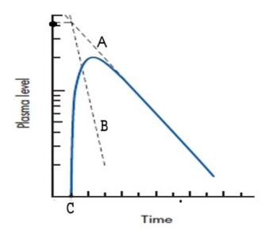
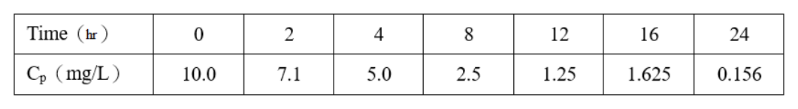
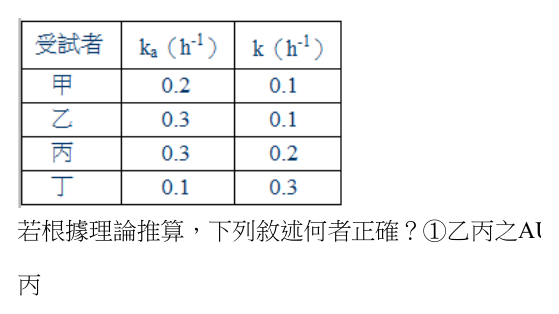
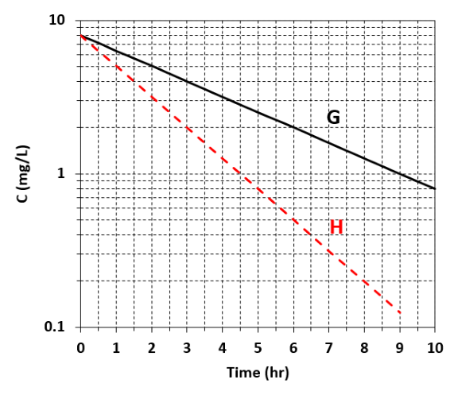

開卷有益 ／
藥師 ／ 藥劑學與生物藥劑學 ／ 110 年第 2 次110 年第 2 次藥師藥劑學與生物藥劑學試題與答案
這一頁是民國 110 年第 2 次藥師藥劑學與生物藥劑學的整份歷屆試題，共 80 題，題目與標準答案出自考選部「國家考試試題及測驗式試題答案」開放資料，其中 75 題附有詳解。以下逐題列出題幹、選項與答案；要計時作答或記錄成績，請用線上練習。
考選部原始場次代碼：110101
線上作答這一科 →
全部 80 題
第 1 題
依安定性試驗基準，在一般儲存條件下，並未建議使用下列何種相對濕度範圍（RH%）？
（A） 60±5（B） 65±5（C） 70±5（D） 75±5答案：（C）
詳解與考點 正解：安定性試驗的儲存條件採指定的溫度與相對濕度配套，60±5% RH、65±5% RH 與 75±5% RH 都可在相應試驗條件中出現，70±5% RH 不屬基準列示的標準範圍，故選 C。
A：60±5% RH 可搭配一般長期儲存條件使用，並非未建議的範圍。
B：65±5% RH 為較高溫儲存條件所用的指定濕度範圍之一，數值不是任意設定。
D：75±5% RH 常與加速安定性試驗的高溫條件配對；雖非長期條件，仍是基準中的標準範圍。
本題考點：安定性儲存條件（stability storage conditions）——溫度與 RH 必須成對記憶，不能只背單一濕度數值；相對濕度（relative humidity, RH）——判斷選項時先核對是否為基準列示的配套範圍，再區分長期與加速條件。
第 2 題 待校
下列不同濃度表示法，何者濃度最大？
（A） 5% w/v（B） 0.5 g/mL（C） 5 mg/mL（D） 1：200答案：（B）
第 3 題
有關「碘酊」與「複方安息香酊」之敘述，下列何者正確？
（A） 均含有乙醇與水作為媒液（B） 皆以簡單溶解法製備（C） 皆為局部外用酊劑（D） 皆添加甘油以增加溶解度答案：（C）
詳解與考點 正解：碘酊與複方安息香酊的共同點在於皆為局部外用酊劑；兩者的成分與製備方式不同，但用途分類相同，故選 C。
A：碘酊可用乙醇與水作媒液，但複方安息香酊的乙醇性浸出特性使水不是兩者共同媒液。
B：碘酊可由簡單溶解製備；複方安息香酊含樹脂性生藥成分，需以浸出方式製備，不能說兩者皆為簡單溶解法。
D：甘油不是碘酊與複方安息香酊共同必備的增溶成分，不能作為兩者的共同敘述。
本題考點：酊劑（tinctures）——比較製劑時先分開看用途、媒液與製備法，三者不一定同時相同；碘酊（iodine tincture）——單純成分可用溶解法製備；複方安息香酊（compound benzoin tincture）——含生藥與樹脂性成分時，應連結乙醇性浸出而非單純溶解。
第 4 題
對於將酚（phenol）與水相混合之敘述，下列何者最適當？
（A） 兩者互不相溶，因此會分層（B） 將混合物加熱至攝氏70度時，可形成均勻溶液（C） 當酚所占重量百分比小於60%時，可形成均勻溶液（D） 當水所占重量百分比大於60%時，可形成均勻溶液答案：（B）
詳解與考點 正解：酚與水是具有上臨界溶解溫度的部分互溶系統。加熱到 70°C 時已高於其形成單一液相的臨界溫度，混合物可成為均勻溶液，故選 B。
A：酚與水不是完全互不相溶；在特定組成與溫度下可互溶，不能一概判為分層。
C：酚低於 60% 的組成仍可能落在兩相區，僅用重量百分比而未限定溫度，不能保證形成均勻溶液。
D：水高於 60% 同樣包含可能分層的組成範圍，水的比例高不等於任何溫度下都單相。
本題考點：上臨界溶解溫度（upper critical solution temperature）——溫度高於臨界點時，原本的兩相區可轉為單相；二成分相圖（binary phase diagram）——判斷互溶性要同時看組成與溫度，不能以單一百分比下結論；部分互溶系統（partially miscible system）——不是完全互溶或完全不互溶的二分法。
第 5 題
下列何者最不可能含有酒精成分？
（A） 酏劑（B） 醑劑（C） 糖漿劑（D） 浸劑答案：（D）
詳解與考點 正解：浸劑通常以水為浸出媒液，製劑本質不需酒精；相較於典型含酒精或可加入酒精的其他劑型，最不可能含有酒精成分，故選 D。
A：酏劑是澄清、甜味的 hydroalcoholic 口服液劑，乙醇常作為共溶媒，因此含酒精具有典型性。
B：醑劑為揮發性物質的乙醇性或 hydroalcoholic 溶液，酒精是其重要媒液。
C：糖漿劑雖以高濃度糖水為主，但處方可添加乙醇作共溶媒或防腐用途，因此不能判為最不可能。
本題考點：浸劑（infusions）——遇到浸劑時先連結水性浸出，不把它與酊劑混同；酏劑與醑劑（elixirs and spirits）——兩者都有乙醇性媒液的特徵，差異在甜味口服液與揮發性成分溶液；共溶媒（cosolvent）——糖漿主體雖為水與糖，仍可能因配方需要含有乙醇。
第 6 題 待校
利用滲漉法抽提生藥1,000 g，以每分鐘滲出3.5 mL滲漉液的速率製備流浸膏，此為何種滲漉速率製備法？
（A） 慢速率（B） 低速率（C） 中速率（D） 快速率答案：（D）
第 7 題
以乾膠法製備礦物油乳劑，初乳的組成中含125 g的acacia時，應混合礦物油若干mL？
（A） 125（B） 250（C） 500（D） 1,000本題送分，無標準答案
詳解與考點 本題經考選部公告一律給分。作答任一選項皆得分。原因是乾膠法處理礦物油初乳時，常用 mineral oil:water:acacia=3:2:1。125 g acacia 對應的礦物油量為 125 g × 3 mL/g=375 mL，四個選項均無此數值，故送分。
A：125 mL 相當於 125 g acacia 對 125 mL oil 的 1 mL/g 比例，不符合礦物油初乳所用的 3 mL/g 比例。
B：250 mL 相當於 2 mL/g，仍不足以形成題幹所指定礦物油與 acacia 的常用初乳比例。
C：500 mL 相當於 4 mL/g，較接近固定油常見的 oil:water:gum=4:2:1，而不是礦物油的比例。
D：1,000 mL 相當於 8 mL/g，會使 acacia 相對不足，不能由題幹的礦物油乾膠法比例推出。
本題考點：初乳比例（primary-emulsion ratio）先辨認油相是固定油或礦物油，再選 oil:water:gum 的對應比例；比例換算（ratio conversion）要固定一個基準量，將 gum 的 g 與 oil 的 mL 逐步代入後才比對選項。
第 8 題
有關o/w型穩定乳劑之敘述，下列何者最適當？
（A） 外觀透明（B） 屬單相系統（C） 水為連續相（D） 油滴呈橢圓形答案：（C）
詳解與考點 正解：o/w 乳劑的 o 是分散相油滴，w 是外相水，因此水為連續相，故選 C。
A：穩定乳劑仍由分散油滴散射光線，外觀多呈混濁或乳白，不以透明為特徵。
B：乳劑含分散相與連續相，是液體分散系統而非真正的單相系統。
D：在界面張力作用下，穩定分散的油滴傾向球形；橢圓形不是 o/w 型的判定條件。
本題考點：o/w 乳劑（oil-in-water emulsion）——油滴分散於水中時，水就是連續相；乳劑的相態（emulsion phases）——有分散相與連續相即屬多相分散系統，不以外觀透明判定；液滴形狀（droplet geometry）——界面張力傾向使液滴成球形，形狀不能替代內外相判斷。
第 9 題
依中華藥典，下列何種裝置，最適合用於檢測吸入氣化噴霧劑之空氣動力學粒徑分布？
（A） 顯微鏡（B） 馬普爾米勒衝擊取樣器（C） 多段式液體衝擊取樣器（D） 次世代衝擊取樣器（未配備預分離器）答案：（D）
詳解與考點 正解：吸入氣化噴霧劑要測的是在氣流中沉積行為所反映的空氣動力學粒徑分布。依中華藥典，此用途採次世代衝擊取樣器且不配備預分離器最合適，故選 D。
A：顯微鏡可觀察幾何粒徑與形態，但不能在規定氣流條件下直接給出空氣動力學粒徑分布。
B：馬普爾米勒衝擊取樣器同樣利用慣性衝擊分級，但不是本題所指定的吸入氣化噴霧劑檢測裝置配置。
C：多段式液體衝擊取樣器可用於某些氣膠粒徑分級，但此題所問的藥典方法以（D）的次世代衝擊取樣器為準。
本題考點：空氣動力學粒徑（aerodynamic particle size）——吸入製劑應以氣流下的沉積行為判斷，不可只量顯微鏡幾何粒徑；次世代衝擊取樣器（Next Generation Impactor, NGI）——遇吸入氣化噴霧劑的藥典粒徑分布檢測時，判斷其指定配置是否含預分離器；級聯衝擊法（cascade impaction）——各級以慣性分離不同空氣動力學粒徑的粒子。
第 10 題
依中華藥典，可用下列何種方法製造氣化噴霧劑？
（A） 冷卻充填法（B） 減壓充填法（C） 高溫充填法（D） 濃縮充填法答案：（A）
詳解與考點 正解：氣化噴霧劑可用冷卻充填法製造，先以低溫使推進劑液化後進行充填，這是藥典所列的方法，故選 A。
B：壓力充填法是另一類製法，但其核心是加壓導入推進劑，不是減壓充填法。
C：高溫會增加揮發性推進劑的蒸氣壓與操作風險，不是標準的充填方法。
D：濃縮充填法不是氣化噴霧劑的藥典製造方法名稱，不能與冷卻或壓力充填混列。
本題考點：冷卻充填法（cold filling）——推進劑可在低溫液化後充填，適用於氣化噴霧劑製造；壓力充填法（pressure filling）——辨認時看推進劑是否在密封容器中以壓力導入；氣化噴霧劑製備（aerosol manufacturing）——方法名稱要與實際推進劑處理方式相符，不可由字面臆測。
第 11 題
下列何者最不可能為非牛頓性物質（non-Newtonian materials）？
（A） 乳劑（B） 懸液劑（C） 軟膏劑（D） 稀乙醇答案：（D）
詳解與考點 正解：稀乙醇是低分子均勻液體，黏度通常不隨剪切速率而改變，最符合牛頓性流體，因此最不可能是非牛頓性物質，故選 D。
A：乳劑含液滴分散相，受內相濃度與界面結構影響，常可呈現塑性或假塑性流動。
B：懸液劑的固體粒子會形成或破壞結構，剪切速率改變時黏度可隨之改變，常為非牛頓性。
C：軟膏劑含半固體基劑與內部結構，受剪切後常見降黏行為，不宜視為典型牛頓性液體。
本題考點：牛頓性流體（Newtonian fluid）——剪切速率改變而黏度維持恆定時，判為牛頓性；非牛頓性流變學（non-Newtonian rheology）——分散粒子、液滴或半固體網絡存在時，優先考慮塑性、假塑性或觸變性；稀乙醇（dilute ethanol）——均勻低分子溶液是典型牛頓性比較對象。
第 12 題
以下何種方法無助於懸液劑分散相之flocculation？
（A） 調整製劑pH值（B） 加入電解質（C） 加入非離子性界面活性劑（D） 降低顆粒大小答案：（D）
詳解與考點 正解：控制性 flocculation 的目標是讓粒子形成鬆散、可再分散的聚集體。降低顆粒大小主要影響沉降速率與比表面積，並不直接促進這種聚集，故選 D。
A：調整 pH 值可改變粒子表面電荷與 zeta potential，使粒子間斥力降到有利 flocculation 的範圍。
B：加入電解質可壓縮電雙層、降低粒子間斥力，因此可用來促進受控制的 flocculation。
C：非離子性界面活性劑在適當濃度下可吸附於粒子表面並調節粒子間作用，能協助形成 flocculation。
本題考點：控制性絮凝（controlled flocculation）——目標是鬆散沉降且易再分散，不是單純讓沉降變慢；zeta potential——調 pH 或加電解質時，判斷是否降低粒子間靜電斥力以促進絮凝；Stokes 沉降（Stokes sedimentation）——縮小粒徑可減慢沉降，但不能當作直接促進 flocculation 的方法。
第 13 題
代碼113之氣化噴霧劑推進劑，其化學式為何？
（A） CCl2FCClF2（B） CClF2CClF2（C） CCl2F2（D） CHClF2答案：（A）
詳解與考點 正解：代碼113對應的鹵化烴含2個碳、3個氯與3個氟；（A）CCl2FCClF2 可寫為 C2Cl3F3，正是氣化噴霧劑推進劑 CFC-113 的結構式，故選 A。
B：（B）CClF2CClF2 含2個氯與4個氟，鹵素組成已不同於113，不能由代碼113推出。
C：（C）CCl2F2 只有1個碳，屬於碳數不同的鹵化烴；代碼113所對應者須有2個碳。
D：（D）CHClF2 含有氫原子且僅有1個碳，與不含氫的 CFC-113 在組成上不符。
本題考點：鹵化烴推進劑編碼（refrigerant numbering）——面對飽和鹵化烴時，先由代碼回推碳、氫與氟數，再以碳的四價補出氯數；氣化噴霧劑推進劑（aerosol propellant）——比較候選物時先核對分子式，不能只憑名稱相近判定。
第 14 題
液體A（η=2.0 cP）300 mL和液體B（η=4.0 cP）200 mL混合後，其液體黏度為多少cP？
（A） 0.4（B） 1.3（C） 2.5（D） 5.0答案：（C）
詳解與考點 正解：本題採用流動度按體積加權的混合法，先將黏度轉為流動度，因為流動度 φ = 1/η。液體A的流動度為 φA = 1 / 2.0 cP = 0.5 cP^-1；液體B的流動度為 φB = 1 / 4.0 cP = 0.25 cP^-1。混合液流動度為 φmix = （300 mL × 0.5 cP^-1 + 200 mL × 0.25 cP^-1） / 500 mL = 0.4 cP^-1。故混合液黏度 ηmix = 1 / φmix = 1 / 0.4 cP^-1 = 2.5 cP，故選 C。
A：（A）0.4 是混合後流動度的數值，單位為 cP^-1；題目所問的是黏度，不能把倒數關係中的中間值直接寫成 cP。
B：（B）1.3 cP 不符合流動度的體積加權與倒數轉換。分辨關鍵在先平均 1/η，而非先把 η 本身任意折算。
D：（D）5.0 cP 把兩液黏度當成可直接相加的量，忽略了各自體積與流動度的加權關係。
本題考點：流動度（fluidity）——題目指定混合液黏度時，先判斷是否應以 φ = 1/η 做體積加權，再取倒數回到黏度；黏度單位換算（viscosity unit）——cP 與 cP^-1 分別代表黏度與流動度，算出數值後必須連同單位一起檢查。
第 15 題
依USP規定之溶離裝置中，何者最適合用於評估藥品自栓劑之釋放？
（A） Apparatus 1（B） Apparatus 2（C） Apparatus 5（D） Apparatus 6本題送分，無標準答案
詳解與考點 本題經考選部公告一律給分。作答任一選項皆得分。原因是題幹只給栓劑，未給浮力、熔融後行為、介質、固定裝置及各論方法；USP 溶離裝置無法據此唯一選定，且 Apparatus 1 與 Apparatus 2 都可能經固定或防浮處理用於評估，故送分。
A：Apparatus 1 的籃網可協助保留會漂浮或崩散的製劑，但網目也可能改變介質接觸與釋放行為，不能只因是栓劑就一律視為最適合。
B：Apparatus 2 可配合固定器或沉降裝置使用，常能觀察常規製劑的釋放；若未處理浮起或熔融後移位，結果同樣可能失真。
C：Apparatus 5 的設計重點是經皮系統的固定與釋放，不能從「栓劑」三字直接推為預設裝置。
D：Apparatus 6 也主要處理經皮系統，除非個別方法另有規定，否則不會因劑型名稱而自動優先。
本題考點：溶離方法選擇（dissolution method selection）先看各論規定、介質、製劑浮沉與固定方式，再選裝置；劑型適配性（dosage-form suitability）不是單靠裝置號碼背誦，而是確認裝置不會人為限制或放大釋放速率。
第 16 題
依中華藥典，製備含防腐劑之栓劑藥品，最適合的基劑為何？
（A） 可可脂（B） 甘油明膠（C） 氫化植物油（D） 聚乙二醇答案：（D）
詳解與考點 正解：依中華藥典選擇含防腐劑栓劑的基劑時，（D）聚乙二醇為水溶性基劑，適合此類製劑並可在體液中逐步溶解釋放內容物，故選 D。
A：（A）可可脂屬油脂性基劑，主要靠體溫熔融釋放藥物；其基劑特性不是含防腐劑栓劑的優先選擇。
B：（B）甘油明膠雖為水溶性基劑，但含水且具吸濕性，不能只因其親水性便視為本題所問的最適基劑。
C：（C）氫化植物油同樣為油脂性基劑，適合以熔融方式釋放的處方，但不符合題目對含防腐劑製劑的基劑判準。
本題考點：栓劑基劑選擇（suppository bases）——先分油脂性與水溶性基劑，再依處方成分與釋放方式選擇；聚乙二醇基劑（polyethylene glycol base）——遇到含防腐劑的栓劑處方時，依藥典優先辨識其作為適宜水溶性基劑的角色。
第 17 題
下列何者作為軟膏劑基劑時，使用上較無油膩感？
（A） white wax（B） yellow wax（C） carbowax（D） simple ointment答案：（C）
詳解與考點 正解：軟膏使用時的油膩感主要來自疏水、油脂性的基劑；（C）carbowax 為聚乙二醇類水溶性基劑，不以油脂膜覆蓋皮膚，因此較無油膩感，故選 C。
A：（A）white wax 為親油性蠟質，可增加基劑硬度，但仍保有油脂性觸感，不能作為較不油膩的判斷。
B：（B）yellow wax 同為親油性蠟質；顏色差異不會把油脂性基劑轉成水溶性基劑。
D：（D）simple ointment 為油脂性軟膏基劑，塗抹後容易形成封閉性油膜，油膩感通常較明顯。
本題考點：軟膏基劑分類（ointment bases）——判斷油膩感時先看基劑是否為油脂性或水溶性；聚乙二醇基劑（polyethylene glycol base）——需要較易水洗、較少油膩感的外用製劑時，可優先考慮此類基劑。
第 18 題
依中華藥典「眼用軟膏金屬粒子檢查法」，下列敘述何者正確？
（A） 初次檢查時，檢品數量為六支（B） 係利用金屬粒子導電性進行檢查（C） 若初檢結果，≧50 μm之粒子總數在八粒以上之檢品數為0，且所有檢品粒子總數為三十，即符合規定（D） 如初次檢查不符規定，則再取檢品十支檢查答案：（C）
詳解與考點 正解：眼用軟膏的金屬粒子檢查同時看單一檢品中較大粒子的數量與全部檢品的累積粒子數。（C）所列的判定組合為：粒徑≥50 μm且粒子數達8粒以上的檢品數為0，並符合全部檢品粒子總數30粒的門檻，因此符合初檢規定，故選 C。
A：（A）初次檢查的檢品數量不是6支；樣品數必須依該檢查法的初檢程序取用。
B：本法是以直接觀察與計數金屬異物為核心，不是利用（B）金屬粒子的導電性進行測定。
D：（D）初檢不符時須依規定進入補充檢查程序，不能概括成再取10支檢查。
本題考點：眼用軟膏金屬粒子檢查（metal particles test for ophthalmic ointments）——判讀時要同時核對單一檢品的大粒子門檻與全體檢品的總數門檻；藥典品質管制（pharmacopoeial quality control）——遇到初檢、複檢題時，樣品數與判定門檻都必須按程序分開記憶。
第 19 題
依中華藥典，聚乙二醇軟膏（polyethylene glycol ointment）之製備，以下列何種方法最適當？
（A） 介入粉碎法（pulverization by intervention）（B） 藥刀法（spatulation）（C） 研調法（levigation）（D） 熔合法（fusion）答案：（D）
詳解與考點 正解：聚乙二醇軟膏由不同性質的聚乙二醇組成，製備時需先加熱使可熔成分形成均一液相，再攪拌冷卻成基劑；（D）熔合法最符合此製程，故選 D。
A：（A）介入粉碎法主要藉少量液體協助粉末細化，適合處理結晶性粉末，不是製備聚乙二醇基劑的主要方法。
B：（B）藥刀法適合少量、質地柔軟且可直接混合的軟膏；對需加熱融合的聚乙二醇組成而言，均一性較不足。
C：（C）研調法用於先以適宜液體潤濕不溶性粉末，再併入基劑；本題的關鍵是基劑成分熔融混合，而非粉末潤濕。
本題考點：熔合法（fusion）——當軟膏基劑含需加熱熔融的固體成分時，先熔融、混勻再冷卻成形；研調法（levigation）——面對不溶性藥物粉末時才以潤濕分散為主，不能和基劑熔融混為一談。
第 20 題 待校
依中華藥典，含親水軟石蠟之基劑，屬於下列何種軟膏基劑？
（A） 油質軟膏基劑（B） 吸收性基劑（C） 水和性基劑（D） 水溶性基劑答案：（B）
第 21 題
以可可脂為筆型尿道栓劑之基劑，下列敘述何者正確？
（A） 男用長約70 mm、重約2公克（B） 男用長約140 mm、重約4公克（C） 女用長約70 mm、重約4公克（D） 女用長約140 mm、重約4公克答案：（B）
詳解與考點 正解：尿道栓劑的大小須配合性別尿道的長度；男性尿道較長，因此以可可脂作為基劑的男用筆型尿道栓劑採較長、較重的規格。（B）男用長約140 mm、重約4 g 符合此判準，故選 B。
A：（A）男用長約70 mm、重約2 g 的規格過小，較接近短而輕的女性用規格，不能配合男用尿道需求。
C：（C）女用長約70 mm 的長度雖符合女性用較短的方向，但4 g 的重量不符合本題所比較的女性用較輕規格。
D：（D）女用不需要男用的140 mm長度，也不採4 g的較重規格，長度與重量都錯置。
本題考點：尿道栓劑（urethral suppository）——比較男女用規格時，先以尿道長度決定長短，再連動判斷重量；可可脂基劑（cocoa butter base）——屬體溫熔融的油脂性基劑，製劑大小仍須由給藥部位的解剖需求決定。
第 22 題
在固定溫度下，圖列中4種軟膏何者黏度最大？
（A） 1（B） 2（C） 3（D） 4答案：（D）
詳解與考點 正解：固定溫度下比較軟膏黏度時，應在相同剪切條件下比較流動阻力；剪應力相對剪切速率所呈現的阻力越大，黏度越大。依官方答案的對應，（D）第4種軟膏為黏度最大者，故選 D。
A：（A）第1種軟膏的編號本身不表示黏度大小；必須依相同剪切條件下的流變關係比較，不能由編號判定。
B：（B）第2種軟膏是否較黏，取決於同一比較條件下的流動阻力，不能把曲線或樣品標號當作黏度排序。
C：（C）第3種軟膏同樣必須以剪應力與剪切速率的關係判讀；單一名稱沒有流變學上的大小意義。
本題考點：黏度（viscosity）——固定溫度且在相同剪切條件下，以流動阻力比較大小；非牛頓流動（non-Newtonian flow）——比較軟膏曲線時先固定剪切速率或剪應力，不能只看曲線編號或單一軸座標。
第 23 題
有關膠囊劑之敘述，下列何者錯誤？
（A） 以機械製備時，總充填重量由膠囊體和帽子之重量總和控制（B） 膠囊殼號數越大，其充填量越少（C） 膠囊殼號數的選擇，主要依藥物量和安定性為考量（D） 膠囊劑應該保存於適當濕度處，以避免沾黏答案：（A）
詳解與考點 正解：機械製備膠囊時，內容物充填量是由粉末或顆粒的計量系統控制；（A）把充填重量說成由膠囊體與帽子的空殼重量總和控制，混淆了外殼重量與內含物重量，因此為錯誤敘述，故選 A。
B：（B）膠囊殼的號數越大，通常可容納的體積越小，故充填量也越少；這是膠囊規格的正確方向。
C：（C）選擇膠囊殼號數時，藥物劑量與安定性是主要考量，並需配合粉體密度及賦形劑體積，敘述方向正確。
D：（D）明膠膠囊須保存在適當濕度；濕度過高易沾黏，過低則可能脆裂，故此敘述正確。
本題考點：膠囊充填量（capsule fill weight）——判斷重量控制時要分清空膠囊殼與實際填入內容物；膠囊保存（capsule storage）——遇到濕度題時同時記住高濕沾黏、低濕脆裂兩個方向。
第 24 題
下列何種測定粉末粒子大小之方法，其估算粒子平均大小之原理與重量有關？①過篩法（sieving） ② 光學 顯微鏡法（optical microscope） ③ 電子感應區法（Coulter counter） ④沉降法（sedimentation）
（A） 僅①④（B） 僅②③（C） ①③④（D） ②③④答案：（A）
詳解與考點 正解：此題問平均粒徑的估算是否以重量分布為依據。（①）過篩法以各篩層保留粉末的重量分率求粒徑分布；（④）沉降法則依粒子沉降行為與各粒徑分率的重量來估算。兩者皆與重量有關，故僅①④成立，故選 A。
B：（B）光學顯微鏡法以直接觀察、量測與計數粒子為主，電子感應區法則以粒子通過孔徑造成的電阻變化為主；兩者都不是重量分布法。
C：（C）雖納入①與④，但錯把③電子感應區法列入。Coulter counter 的訊號與粒子排開電解質的體積相關，不以重量作為平均粒徑原理。
D：（D）同時把②光學顯微鏡法與③電子感應區法列為重量法，混淆了粒子數、粒子體積與重量分布三種不同的量測基礎。
本題考點：過篩法（sieving）——要算重量平均粒徑時，以各篩層保留的重量分率做分布；沉降法（sedimentation）——依沉降速度與粒徑分布判讀，和直接數粒子的顯微鏡法不同；電子感應區法（Coulter counter）——訊號反映粒子體積造成的電阻變化，不可誤當重量法。
第 25 題
下列何者最不適合做為錠劑之腸溶包衣？
（A） shellac（B） hydroxypropyl methylcellulose（C） polyvinyl acetate phthalate（D） cellulose acetate phthalate答案：（B）
詳解與考點 正解：腸溶包衣材料必須在胃的酸性環境維持完整，進入較高pH的腸道才溶解；（B）hydroxypropyl methylcellulose 為水溶性成膜材料，本身不具腸溶所需的pH依賴溶解特性，因此最不適合，故選 B。
A：（A）shellac 可形成耐酸性膜層，雖製程條件須控制，仍可作為腸溶包衣材料。
C：（C）polyvinyl acetate phthalate 具有酸中不溶、較高pH下溶解的性質，符合腸溶包衣的功能。
D：（D）cellulose acetate phthalate 同樣是典型的腸溶性聚合物，可避免藥錠在胃中過早釋放。
本題考點：腸溶包衣（enteric coating）——先判斷聚合物是否具酸中不溶、腸道較高pH下溶解的特性；成膜劑（film former）——能形成薄膜不等於具腸溶性，須再看其pH依賴溶解行為。
第 26 題
糖衣錠在裸錠和糖衣層間有一層防水固封包衣，最可能為下列何者？
（A） 蔗糖（B） 蟲膠（C） 硬脂酸鎂（D） 滑石粉答案：（B）
詳解與考點 正解：糖衣過程中的防水固封包衣是為了隔離裸錠與後續水性糖衣層，避免水分滲入錠芯；（B）蟲膠可形成耐水膜，最符合固封包衣的用途，故選 B。
A：（A）蔗糖是糖衣層的主要成分，易溶於水，不能擔任防水固封層。
C：（C）硬脂酸鎂主要作為潤滑劑或抗黏著劑，並非在錠芯外形成連續防水膜的標準材料。
D：（D）滑石粉可作為糖衣過程的撒粉或抗黏著材料，但不會單獨形成防水固封層。
本題考點：糖衣錠固封包衣（sealing coat）——當後續包衣含水時，先以耐水膜隔離錠芯；蟲膠（shellac）——判斷其用途時，抓住可形成耐水保護膜，而不是把它和糖衣主成分混淆。
第 27 題
製備可掩蓋味覺之腸溶膜衣錠時，最推薦使用下列何種型式的流動床？①頂噴型 ②底噴型 ③側噴型
（A） 僅①（B） 僅②（C） 僅③（D） ①②③答案：（A）
詳解與考點 正解：在本題所指完整錠劑的腸溶膜衣製程，需讓錠芯於流動床內反覆受霧化液均勻覆蓋；（①）頂噴型符合此包衣需求，故僅①推薦，故選 A。
B：（B）底噴型常用於顆粒或丸粒的 Wurster 包衣，製劑循環軌跡與完整錠劑膜衣的優先選擇不同。
C：（C）側噴型的氣流與產品運動方式適合特定顆粒或丸粒操作，不是本題完整錠劑腸溶膜衣的推薦型式。
D：（D）①②③並非都適用；分辨關鍵在先辨識產品是完整錠劑還是顆粒、丸粒，再選擇噴霧方向。
本題考點：流動床包衣（fluid-bed coating）——先分製劑是完整錠劑或顆粒、丸粒，再依產品循環軌跡選噴霧方向；腸溶膜衣（enteric film coating）——膜層均勻性是兼顧胃中耐酸、腸中釋放與遮蔽味覺的前提。
第 28 題
以乾式法製備「發泡性顆粒劑」時，下列敘述何者錯誤？
（A） 通常以檸檬酸之結晶水為黏合劑（B） 為得較均一之粒徑，檸檬酸粉末應先通過銅製篩網過篩（C） 混合後之粉末宜置於34～40℃烘箱加熱，並偶爾攪拌，以製備軟塊（D） 製得之軟塊通常含許多小氣孔，故其外觀常成海綿狀答案：（B）
詳解與考點 正解：以乾式法製備發泡性顆粒劑時，檸檬酸的結晶水受熱後可提供黏合作用；（B）要求檸檬酸粉末先通過銅製篩網不適當，因酸性配方接觸銅材可能造成不相容或金屬污染，故選 B。
A：（A）乾式法正是利用檸檬酸的結晶水作為黏合來源，使混合粉末受熱後能形成軟塊，敘述正確。
C：（C）混合粉末於34～40℃溫和加熱並偶爾攪拌，可讓結晶水發揮黏合作用而形成軟塊，符合乾式法流程。
D：（D）軟塊形成時伴隨發泡反應與孔隙生成，外觀呈海綿狀是此類顆粒劑製程可見的特徵。
本題考點：發泡性顆粒劑乾式法（dry fusion method）——先利用檸檬酸結晶水作為黏合來源，再以溫和加熱形成軟塊；賦形劑相容性（excipient compatibility）——酸性處方接觸器材時，需避開可能反應或造成金屬污染的材質。
第 29 題
依中華藥典，有關溶離度試驗之敘述，下列何者錯誤？
（A） 不銹鋼網籃之網孔為10網目篩網（B） 馬達之轉速範圍於25至150 rpm（C） 不銹鋼網籃底距試驗槽底應維持2.5 cm（D） 一般使用溶離媒液的溫度保持在37±0.5℃答案：（A）
詳解與考點 正解：溶離度試驗的籃型裝置對網籃孔徑有固定規格；（A）把不銹鋼網籃寫成10網目篩網，網孔過粗，不符合藥典規定，因此為錯誤敘述，故選 A。
B：（B）馬達轉速可在25至150 rpm的規定範圍內控制，以配合不同品項的試驗條件，敘述正確。
C：（C）網籃底部與試驗槽底維持2.5 cm的距離，是為了固定流體力學條件與試驗再現性，敘述正確。
D：（D）溶離媒液通常維持在37±0.5℃，以接近體溫並降低溫度造成的溶離差異，敘述正確。
本題考點：溶離度試驗裝置（dissolution apparatus）——遇到網籃、轉速、距離與溫度題時，要把各項固定條件分別核對；試驗再現性（method reproducibility）——裝置幾何與溫度改變都會改變介質流動與溶離速率，不能視為可任意調整的細節。
第 30 題
下列賦形劑何者最有可能增加難溶性藥品之溶離速率（dissolution rate）？
（A） calcium sulfate（B） ethylcellulose（C） lactose（D） magnesium stearate答案：（C）
詳解與考點 正解：難溶性藥品要提高溶離速率，賦形劑應有助於潤濕或在水相中溶解後形成孔道；（C）lactose 為水溶性稀釋劑，可改善水分進入錠劑的條件並增加藥物暴露表面，故選 C。
A：（A）calcium sulfate 溶解度低，作為稀釋劑時不會像水溶性糖類般有效形成促進介質滲入的孔道。
B：（B）ethylcellulose 為疏水性成膜聚合物，常用於延緩釋放；其阻隔水分的特性與提高難溶性藥物溶離的方向相反。
D：（D）magnesium stearate 為疏水性潤滑劑，過量時可包覆粒子並降低潤濕性，反而不利於溶離。
本題考點：溶離速率（dissolution rate）——難溶性藥物的處方優先找能增加潤濕、孔隙或有效表面積的成分；水溶性稀釋劑（water-soluble diluent）——錠劑接觸介質後可溶出形成孔道，常有助於介質滲入與藥物釋放。
第 31 題
有關速溶錠（rapidly dissolving tablets）之敘述，下列何者最適當？
（A） 給藥後3分鐘內，能在口腔溶離達80%（B） 在口腔給藥後，其療效起始作用時間短於15分鐘（C） 在口腔中能於1分鐘內崩散或溶解（D） 在胃酸下至少能維持1小時安定性答案：（C）
詳解與考點 正解：速溶錠的核心判準是藥錠在口腔內快速崩散或溶解，而非藥物進入體內後的療效時間；（C）在口腔中1分鐘內崩散或溶解符合此特徵，故選 C。
A：（A）給藥後3分鐘內溶離達80%是特定溶離終點的描述，不能作為速溶錠在口腔內快速崩散的主要判準。
B：（B）療效起始時間會受藥物吸收、分布與作用機轉影響；即使錠劑很快崩散，也不能一律以15分鐘界定。
D：（D）胃酸下的安定性屬腸溶或耐酸製劑的考量，與速溶錠在口腔中迅速崩散的功能不同。
本題考點：速溶錠（rapidly dissolving tablets）——判斷時直接看口腔中的崩散或溶解時間，不用療效起始時間取代；崩散與溶離（disintegration and dissolution）——崩散是固體劑型瓦解，溶離是藥物進入溶液，兩者相關但不能互換。
第 32 題
有關崩散度試驗之敘述，下列何者最不適當？
（A） 腸衣錠：於室溫以水漬浸5分鐘，以人工胃液進行試驗1小時，不得有破裂；再以人工腸液進行試驗，於正文 規定時間，錠劑應完全崩散（B） 丸劑：以人工胃液進行試驗60分鐘，應完全崩散，若沒有完全崩散時再延長60分鐘（C） 口腔錠：以水進行試驗4小時，錠劑應完全崩散（D） 舌下錠：以水進行試驗，於正文規定時間，錠劑應完全崩散答案：（B）
詳解與考點 正解：崩散度試驗依劑型設定介質與階段，丸劑在初次人工胃液試驗未完全崩散時，後續必須依規定的複試程序判定；（B）把處理方式概括為原條件再延長60分鐘，未依丸劑的規定程序進行，因此最不適當，故選 B。
A：（A）腸衣錠先經水浸漬與人工胃液階段而不得破裂，再轉人工腸液於規定時間內完全崩散，正確反映其先耐胃、後腸溶的設計。
C：（C）口腔錠以水進行試驗並在4小時內完全崩散，符合其在口腔局部使用而非追求立即全身吸收的劑型特性。
D：（D）舌下錠以水進行試驗並須於正文規定時間內完全崩散，符合以規定時間判定該劑型崩散性的原則。
本題考點：崩散度試驗（disintegration test）——先依劑型選對介質、時間與是否分階段試驗，不能用同一程序套用所有固體劑型；腸衣錠（enteric-coated tablet）——判斷順序必須是人工胃液中保持完整、人工腸液中再於規定時間崩散。
第 33 題
下列何者為IL-2 receptor antagonist，屬chimeric單株抗體？
（A） basiliximab（B） bevacizumab（C） ibritumomab（D） imatinib答案：（A）
詳解與考點 正解：IL-2 receptor antagonist 中，針對 IL-2 receptor α鏈 CD25 的 chimeric 單株抗體是（A）basiliximab；名稱中的 -ximab 也提示其為嵌合型單株抗體，故選 A。
B：（B）bevacizumab 是 humanized 單株抗體，主要中和 VEGF，不是 IL-2 receptor antagonist。
C：（C）ibritumomab 的標的是 CD20，常見於放射免疫治療的脈絡；標的與 IL-2 receptor 不同。
D：（D）imatinib 是小分子 tyrosine kinase inhibitor，不是單株抗體，也不以 IL-2 receptor 為標的。
本題考點：單株抗體命名（monoclonal antibody nomenclature）——看到 -ximab 時優先辨識為 chimeric 抗體，再核對標的；IL-2 receptor antagonist——移植免疫抑制題中，先抓 CD25/IL-2 receptor α鏈，再和抗 VEGF、抗 CD20 藥物區分。
第 34 題
有關生物技術及相關產品之敘述，下列何者錯誤？
（A） 對同一抗體而言，其Sfv片段通常都會比Fab'片段小（B） 重組DNA（rDNA）技術可用來生產蛋白質藥物（C） antisense藥物之主要作用為使細胞無法產生所需之標的蛋白質（D） 生物相似藥為與原開發的分子複製物（clone）相同答案：（D）
詳解與考點 正解：生物相似藥的判斷不在於分子是否完全相同，而在於是否對參考生物製劑具有高度相似性，且沒有具臨床意義的差異。把它說成與原開發品的分子複製物，混淆了複雜生物製劑的相似性評估與完全一致的概念，故選 D。
A：同一抗體的（A）Sfv 片段只保留可變區及其連接結構，通常比仍含部分恆定區的 Fab' 片段小，敘述正確。
B：（B）重組 DNA（rDNA）技術可使宿主表現人類蛋白或其他重組蛋白，是蛋白質藥物生產的基本方法。
C：（C）antisense 藥物以互補核酸序列結合目標 RNA，可抑制轉譯或改變 RNA 處理，因而降低所需標的蛋白的生成。
本題考點：生物相似藥（biosimilar）——判斷時看與參考生物製劑的高度相似性及臨床差異，而不是要求完全相同；抗體片段（antibody fragments）——比較分子大小時，單鏈可變區通常小於保留恆定區的 Fab'；反義藥物（antisense oligonucleotide）——看到與核酸序列互補結合時，判斷其作用是降低或調節標的蛋白表現。
第 35 題
腎上腺素注射液加入sodium bisulfite之主要目的為何？
（A） 防腐作用（B） 防止水解（C） 防止氧化（D） 緩衝劑答案：（C）
詳解與考點 正解：腎上腺素在水溶液中容易被氧化而失去活性，sodium bisulfite 是還原性抗氧化劑，可優先被氧化以保護藥物，故選 C。
A：（A）防腐劑的主要任務是抑制微生物生長；sodium bisulfite 在此加入的主要目的不是提供防腐效果。
B：（B）水解是化學鍵與水反應所造成的分解，sodium bisulfite 所處理的是氧化途徑，不是水解途徑。
D：（D）緩衝劑用於維持 pH；sodium bisulfite 的關鍵功能是提供還原性，不能以緩衝作用解釋。
本題考點：抗氧化劑（antioxidant）——遇到易氧化的兒茶酚胺類溶液時，判斷是否加入可被優先氧化的還原劑；防腐劑（preservative）——判別添加物用途時，抑菌與防氧化是兩條不同的製劑安定化路徑。
第 36 題
FDA強烈建議，應停止下列何者做為新生兒注射劑之防腐成分？
（A） benzyl alcohol（B） butylhydroxy anisole（C） hypophosphorous acid（D） sodium metabisulfite答案：（A）
詳解與考點 正解：新生兒對 benzyl alcohol 及其代謝產物的清除能力未成熟，含此防腐劑的注射製劑曾與嚴重的 gasping syndrome 相關，因此 FDA 強烈建議停止將其作為新生兒注射劑的防腐成分，故選 A。
B：（B）butylhydroxy anisole 是製劑安定化相關的抗氧化成分，不是本題所指與新生兒 benzyl alcohol 毒性相關的防腐劑。
C：（C）hypophosphorous acid 雖可作為製劑中的安定化相關成分，但不是此項新生兒防腐劑警示所針對的成分。
D：（D）sodium metabisulfite 的重要風險在於 sulfite 敏感性等反應；本題問的是 benzyl alcohol 對新生兒的特定防腐劑風險。
本題考點：benzyl alcohol 新生兒毒性（benzyl alcohol toxicity）——新生兒注射劑若含此防腐劑，應優先辨識其代謝未成熟與 gasping syndrome 風險；注射劑添加物（parenteral excipients）——判別安全性時要把抗氧化劑、酸鹼調節劑與防腐劑的用途分開。
第 37 題
依中華藥典，除另有規定外，多劑量容器內貯存注射劑之總容量應為何？
（A） 不得大於10個單劑量且總容量≦30 mL（B） 不得大於10個單劑量且總容量≦50 mL（C） 不得大於5個單劑量且總容量≦30 mL（D） 不得大於5個單劑量且總容量≦50 mL答案：（A）
詳解與考點 正解：多劑量容器的容量限制要同時核對「相當於幾個單劑量」與「總容量」兩個條件。依題示藥典規格，除另有規定外，不得大於 10 個單劑量，且總容量不得超過 30 mL，故選 A。
B：（B）把總容量上限改為 50 mL，超出本題規格的 30 mL 上限。
C：（C）雖保留總容量 30 mL，卻把單劑量倍數限制改成 5 個，沒有表達藥典所定的 10 個單劑量上限。
D：（D）同時把單劑量倍數改成 5 個、總容量改成 50 mL，兩項都與題示規格不符。
本題考點：多劑量容器容量（multi-dose container volume）——遇到藥典容量題時，必須同時比對單劑量倍數與總 mL 數，不能只記其中一項；藥典規格判讀（pharmacopoeial specification）——數值題先找出「除另有規定外」的通則，再排除被替換的門檻。
第 38 題
依中華藥典，下列何者不符合藥典「無菌注射用水」之規格？
（A） 每毫升所含細菌內毒素不得超過0.25 IU（B） 得添加適當的抗菌劑以維持其安定性（C） 應置於單劑量玻璃或塑膠容器中，且容量不得超過1 L（D） 若未經添加適當之成分調節為等滲透壓，不得供血管注射用答案：（B）
詳解與考點 正解：無菌注射用水（Sterile Water for Injection）本身不含抗菌劑；加入抑菌成分的是另一類具抑菌用途的注射用水，不能把該添加物視為本品的安定化規格，故選 B。
A：（A）每毫升細菌內毒素不得超過 0.25 IU，是無菌注射用水的規格要求之一。
C：（C）本品應以單劑量玻璃或塑膠容器包裝，且容量不得超過 1 L，敘述符合規格。
D：（D）未調整為等滲透壓的無菌注射用水不宜直接供血管注射，必須先依用途配成適當滲透壓的製劑。
本題考點：無菌注射用水（Sterile Water for Injection）——看到「無菌」不等於可加 preservative，需與含抑菌劑的 bacteriostatic water 區分；滲透壓（tonicity）——注射用溶媒若未調成適當滲透壓，不能直接作血管注射用。
第 39 題
有關熱原（pyrogens）及熱原試驗之敘述，下列何者錯誤？
（A） 熱原主要係由革蘭氏陰性菌之細胞壁內脂多醣而來（B） 熱原試驗之目的為測試藥品於注射後使病人發熱之程度，以不超過規定最低限度為準則（C） 熱原試驗中所使用之注射器、針頭及其他玻璃器皿等可置於250℃中乾熱30分鐘以去除熱原（D） 依中華藥典規定，熱原試驗需以不超過1 mL/kg 的用量，於10分鐘內經兔子耳靜脈注入答案：（D）
詳解與考點 正解：本題錯在兔子熱原試驗的注射用量。依題示藥典條件，供試品於 10 分鐘內經兔耳靜脈注入時，用量上限為 10 mL/kg，而非（D）所寫的 1 mL/kg，故選 D。
A：（A）細菌性熱原主要來自革蘭氏陰性菌細胞壁的脂多醣（lipopolysaccharide），是最重要的內毒素來源。
B：（B）熱原試驗用來評估注射後的致熱反應是否超過藥典規定的限度，判斷核心是體溫上升幅度而非製劑是否無菌。其「最低限度」的用語並不精確——藥典訂的是合格上限，即體溫上升總和不得超過規定值；惟此屬敘述用語的瑕疵，與（D）把 10 mL/kg 誤寫成 1 mL/kg 的數值錯誤不同層級，依官方答案（B）不列為本題的錯誤敘述。
C：（C）熱原去除需要足夠高溫的乾熱處理；（C）250℃、30 分鐘是針對玻璃器皿等去熱原的條件。
本題考點：細菌內毒素（bacterial endotoxin）——見到革蘭氏陰性菌與脂多醣時，先連結其致熱性；熱原試驗（pyrogen test）——判讀兔試驗時，將注射途徑、每公斤用量與注入時間一併核對；去熱原（depyrogenation）——高溫乾熱可去除熱原，不能與一般滅菌概念混用。
第 40 題
有關眼用溶液劑微粒物質檢查法之敘述，下列何者正確？
（A） 大部分品項以鏡檢法檢查，即可符合規定，然而某些品項須以光阻法確認（B） 除澄明度和黏度與水較為接近之純溶液外，任何樣品用光阻法進行計數所得結果可能錯誤（C） 光阻法微粒物質限値之規定中，粒徑大於或等於10 μm之粒子數目，每毫升不得超過10個（D） 鏡檢法微粒物質限値之規定中，粒徑大於或等於50 μm之粒子數目，每毫升不得超過10個答案：（B）
詳解與考點 正解：光阻法以液體通過感測區時遮蔽光線的訊號計數，透明度與黏度近於水的純溶液最適用；混濁、高黏度或易有氣泡的樣品會使訊號失真，因此（B）正確，故選 B。
A：（A）光阻法與鏡檢法應依樣品特性選用，不是先以鏡檢法通用檢查、再由部分品項以光阻法確認的固定流程。
C：（C）眼用溶液中粒徑大於或等於 10 μm 的限值不是每毫升 10 個；此粒徑級距的容許數較高，不能把不同粒徑級距的數字互換。
D：（D）鏡檢法的分級重點是粒徑大於或等於 10 μm 與 25 μm 的粒子數，不是（D）所列粒徑大於或等於 50 μm、每毫升 10 個的組合。
本題考點：光阻法（light obscuration method）——樣品必須澄明且黏度接近水，否則以光路訊號計數容易失真；鏡檢法（microscopic particle count test）——遇到高黏度、混濁或含氣泡樣品時，用直接觀察微粒的方式避免光阻干擾；微粒限值（particulate matter limits）——先配對粒徑級距與對應容許數，不能只記單一數字。
第 41 題
具有下列何種性質之注射劑，適合以鏡檢方式來進行注射劑的微粒物質檢查？
（A） 澄明度高者（B） 黏度較高者（C） 抽檢時不易產生氣泡者（D） 抽檢時不易產生氣體者答案：（B）
詳解與考點 正解：高黏度注射劑在光阻法中可能流動不穩或改變遮光訊號，鏡檢法則可直接觀察微粒，較適合處理此類樣品，故選 B。
A：（A）澄明度高的樣品通常更適合光阻法，不能作為優先選鏡檢法的判準。
C：（C）抽檢時不易產生氣泡有利於避免光阻法的假性遮光訊號；分辨關鍵在高黏度造成的量測限制，而不是單看氣泡。
D：（D）是否易產生氣體不是鏡檢法的主要適用條件，產氣反而可能造成任何微粒檢查的干擾。
本題考點：鏡檢法（microscopic particle count test）——高黏度或不適合穩定流過感測區的樣品，優先以直接視覺計數檢查；光阻法（light obscuration method）——澄明、低黏度且少氣泡的溶液較能得到可靠計數。
第 42 題
依中華藥典規定，注射劑的注射用量超過若干mL時，對於附加物之選擇應予以特別的注意？
（A） 1（B） 2（C） 3（D） 5答案：（D）
詳解與考點 正解：注射體積愈大，附加物造成的總暴露量愈高，因此當注射用量超過 5 mL 時，藥典要求對附加物的選擇特別注意，故選 D。
A：（A）1 mL 未達本題所定的需特別注意門檻，不能作為正確數值。
B：（B）2 mL 仍低於題示的 5 mL 門檻。
C：（C）3 mL 也未達應特別注意附加物選擇的注射用量。
本題考點：注射劑附加物（parenteral excipients）——判斷風險時要把單次給藥體積納入，體積增加會提高附加物暴露量；藥典門檻（pharmacopoeial threshold）——問到「超過若干量」時，辨認的是觸發額外注意義務的數值，不是任一較小體積。
第 43 題
下列何成分之0.5%熱水溶液，可以用來清洗一般橡皮塞（rubber closures）？
（A） sodium chloride（B） sodium acetate（C） sodium pyrophosphate（D） sodium lauryl sulfate答案：（C）
詳解與考點 正解：一般橡皮塞在製備前的指定清洗方式，是以 0.5% sodium pyrophosphate 熱水溶液處理，以去除表面污染物並利於後續製程，故選 C。
A：（A）sodium chloride 的常見用途與滲透壓調整有關，不是本題指定的一般橡皮塞熱水清洗成分。
B：（B）sodium acetate 可作為緩衝或調節相關成分，並非題示濃度下用於橡皮塞清洗的指定物質。
D：（D）sodium lauryl sulfate 具有界面活性劑的清潔性，因而看似合理；但本題問的是一般橡皮塞的指定 0.5% 熱水清洗液，成分為 sodium pyrophosphate。
本題考點：橡皮塞清洗（rubber closure washing）——問到指定清洗液時，辨認 0.5% sodium pyrophosphate 與其熱水處理條件；界面活性劑（surfactant）——具有一般清潔性不等於符合特定注射劑製程的規定方法。
第 44 題
依中華藥典滅菌法III，耐熱藥物製成25 mL油溶液，並置於密閉容器中，其使用之滅菌溫度與時間何者正 確？
（A） 115℃、25分鐘（B） 121℃、15分鐘（C） 150℃、60分鐘（D） 150℃、30分鐘答案：（C）
詳解與考點 正解：題幹指定耐熱藥物、25 mL 油溶液、密閉容器及滅菌法 III，必須依該條件配對乾熱處理的溫度與時間；150℃、60 分鐘才符合此組合，故選 C。
A：（A）115℃、25 分鐘是較低溫的濕熱條件，未符合題定油溶液依滅菌法 III 所需的處理組合。
B：（B）121℃、15 分鐘也是常見高壓蒸氣滅菌條件，不能直接套用於本題的油溶液與滅菌法 III。
D：（D）雖同為 150℃，但 30 分鐘的處理時間不足，少了題定條件所需的 30 分鐘。
本題考點：乾熱滅菌（dry heat sterilization）——見到耐熱油性製劑與密閉容器時，先判斷是否應套用乾熱條件；滅菌條件配對（sterilization time-temperature pairing）——溫度與時間是一組規格，不能只對到其中一個數值。
第 45 題
比較elementary osmotic pump（EOP）和push-pull osmotic pump（PPOP）二種滲透壓控釋系統，下列敘述何者 錯誤？
（A） PPOP比EOP多了一層吸水膨脹的高分子層，使藥物能遵循first order kinetics釋放（B） 在PPOP系統，藥物層及高分子層均會加入osmotic agents，以提高系統內滲透壓（C） 和EOP相比，PPOP所選用的高分子材質亦提高了水溶性不佳藥物的遞送效率（D） 在PPOP系統，不論是溶解狀態或懸浮的藥物均可自此系統釋放出來答案：（A）
詳解與考點 正解：push-pull osmotic pump（PPOP）多出的高分子推動層吸水膨脹後，持續把藥物層內容物經釋藥孔推出，目標是近似 zero-order 的受控釋放，而不是（A）所稱的 first-order kinetics，故選 A。
B：（B）PPOP 的藥物層與推動層可加入 osmotic agents 以吸水並建立滲透壓，敘述正確。
C：（C）PPOP 可將水溶性不佳的藥物以懸浮系統推出，較 EOP 能處理的藥物型態更廣，敘述正確。
D：（D）PPOP 可釋出已溶解或懸浮狀態的藥物，正是其相對於 EOP 的實用優勢之一。
本題考點：推拉式滲透壓幫浦（push-pull osmotic pump）——看到吸水膨脹的推動層時，判斷它以機械推力維持受控釋放；零階釋放（zero-order release）——滲透壓系統的誘答常把近似固定釋放速率誤寫成濃度依賴的 first-order kinetics；難溶性藥物遞送（poorly soluble drug delivery）——可處理懸浮藥物是 PPOP 的辨識重點。
第 46 題
具有下列何項特性之藥物，最適合發展為口服extended-release製劑？
（A） 用於治療急性疾病（B） 從胃腸道均一吸收（C） 半衰期約1小時（D） 治療指數狹窄答案：（B）
詳解與考點 正解：口服 extended-release 製劑在胃腸道移動期間仍會持續釋藥，藥物必須能在各段胃腸道均一吸收，才不會因釋放位置改變而失去療效，因此（B）最適合，故選 B。
A：（A）急性疾病通常需要快速起效與彈性調整，不適合以延長釋放來延後或固定藥物輸入。
C：（C）半衰期約 1 小時的藥物消除太快，若要維持全天濃度往往需要很大的劑量或很長釋放時間，通常不是最適合的 extended-release 對象。
D：（D）治療指數狹窄時，劑量傾倒或個體吸收差異更可能使濃度越過安全範圍，因此是長效製劑的重要限制。
本題考點：長效製劑候選藥物（extended-release candidate）——判斷時先問藥物是否能在整段胃腸道持續吸收；半衰期（half-life）——過短的半衰期會使所需延長釋放範圍不易實現；治療指數（therapeutic index）——治療窗狹窄的藥物要警覺劑量傾倒與濃度波動。
第 47 題
Chlorpheniramine polistirex suspension為一種鹼性藥物，吸附於陰離子交換樹脂圓粒後，包覆上一層控釋膜， 所形成的可懸浮性包覆圓粒的懸液劑；對此製劑，下列敘述何者錯誤？
（A） 藥物釋出會受到離子濃度影響（B） 在腸道的釋出速率比胃部較快（C） 溶液的酸鹼值可調整釋出速率（D） 屬於液體型長效性劑型答案：（B）
詳解與考點 正解：此樹脂複合物的釋放受腸胃道 pH 與離子交換影響。對鹼性 chlorpheniramine 而言，胃部酸性環境中的氫離子競爭較強，較有利於藥物自樹脂釋出；因此（B）說腸道釋出速率較胃部快，方向相反，故選 B。
A：（A）外界離子可與結合於樹脂上的藥物競爭交換，離子濃度會影響釋放，敘述正確。
C：（C）pH 會改變藥物及樹脂交換基的離子化狀態，因而可調整釋出速率。
D：（D）將包覆控釋膜的藥物樹脂圓粒製成可懸浮的懸液劑，可提供液體型長效給藥，敘述正確。
本題考點：藥物樹脂複合物（drug-resin complex）——看到離子交換樹脂時，判斷釋放會受外界離子競爭影響；pH 依賴釋放（pH-dependent release）——比較胃腸道釋出速率時，先看藥物酸鹼性與氫離子競爭；液體型長效製劑（liquid sustained-release dosage form）——包覆樹脂圓粒可兼顧懸液劑外觀與延長釋放。
第 48 題
Covera-HS錠片屬滲透壓性劑型，其藥物onset時間約在服藥後4～5小時。請問啟動該藥物釋放之機制為何？
（A） 適量厭水性物質添加於核蕊（B） 核蕊在包覆腸溶包衣後再包覆半透膜層（C） 適量厭水性物質添加於半透膜內（D） 包覆可緩慢溶解層於核蕊與半透膜層間答案：（D）
詳解與考點 正解：Covera-HS 的 4～5 小時 onset 來自核蕊與半透膜層之間的可緩慢溶解層。該層先逐漸溶解，之後水分才可經半透膜進入並建立滲透壓推動藥物釋放，故選 D。
A：（A）在核蕊加入厭水性物質會改變潤濕或溶出性，但不是此滲透壓劑型設計固定 lag time 的機制。
B：（B）腸溶包衣以腸道 pH 觸發溶解；Covera-HS 的延遲則靠核蕊外的可溶解層，兩者的啟動訊號不同。
C：（C）在半透膜內加入厭水性物質會影響水分通透性，不能取代位於核蕊與半透膜間、負責延遲啟動的可溶解層。
本題考點：延遲釋放層（delay layer）——若題幹給出固定的 lag time，先找設於藥物層外、可逐漸消失的阻隔層；滲透壓控釋（osmotic controlled release）——半透膜讓水進入、滲透壓推藥物外出，與腸溶包衣的 pH 溶解機制不同。
第 49 題
林先生65歲、80公斤，腎功能正常。已知某藥半衰期為6小時，分布體積為體重的25%，今以該藥治療欲達穩 定濃度範圍於10～20 mg/L，若超過25 mg/L則出現副作用。則最適當的多次注射給藥設計為何？（
（A） 200 mg，Q6H（B） 320 mg，Q6H（C） 320 mg，Q8H（D） 400 mg，Q8H答案：（A）
詳解與考點 正解：半衰期6小時、分布體積為體重25%（80 kg×0.25=20 L），若給藥間隔τ與半衰期相等（τ=6 h,e^(-kτ)=0.5），重複IV注射之穩定狀態峰、谷濃度為Cmax,ss=(Dose/Vd)/(1-e^(-kτ))、Cmin,ss=Cmax,ss×e^(-kτ)。代入200 mg：Cmax,ss=(200/20)/(1-0.5)=20 mg/L,Cmin,ss=20×0.5=10 mg/L，恰落於目標濃度範圍10～20 mg/L內且未超過25 mg/L的副作用閾值，故選A。
B：320 mg Q6H代入同一公式，Cmax,ss=(320/20)/0.5=32 mg/L，已超過25 mg/L的副作用閾值，不適當。
C：320 mg Q8H因間隔拉長，e^(-kτ)=e^(-0.1155×8)≈0.397,Cmax,ss=(320/20)/(1-0.397)≈26.5 mg/L，同樣超過副作用閾值。
D：400 mg Q8H代入後Cmax,ss更高，約33 mg/L，遠超過副作用閾值，不適當。
本題考點：重複IV注射穩定狀態峰谷濃度公式（steady-state peak/trough for repeated IV bolus）——Cmax,ss=(Dose/Vd)/(1-e^(-kτ))、Cmin,ss=Cmax,ss×e^(-kτ),為多次給藥設計的基礎關係式；給藥間隔與半衰期的搭配——當τ等於半衰期時峰谷濃度比為2:1,是設計給藥方案時常見且易於估算的搭配方式。
第 50 題
已知某抗生素之口服生體可用率為80%，排除半衰期為1.38 hr，吸收速率常數為1.5 h-1。經口服100 mg後，此 抗生素到達體內最高血中濃度的時間（tmax）為若干小時？（ln2=0.693；ln3=1.10）
（A） 0.21（B） 1.10（C） 0.53（D） 1.45答案：（B）
詳解與考點 正解：一階吸收、一階消除模型的最高濃度時間用 tmax = ln(ka / ke) / (ka - ke)，因為最高濃度發生於吸收速率與消除速率相等時。先由半衰期求 ke = 0.693 / 1.38 h = 0.502 h^-1，約為 0.5 h^-1。代入 ka = 1.5 h^-1：tmax = ln(1.5 / 0.5) / (1.5 - 0.5) h^-1 = ln3 / 1 h^-1 = 1.10 h。口服生體可用率與劑量影響濃度大小，不改變此模型下的 tmax，故選 B。
A：（A）0.21 h 若由正確分子 ln3 = 1.10 回推，分母須為 1.10 / 0.21 = 5.24 h^-1；這不是 ka - ke = 1.0 h^-1，故不成立。
C：（C）0.53 h 接近把速率常數相加作分母的錯誤結果；tmax 公式應用 ka - ke，而不是 ka + ke。
D：（D）1.45 h 會要求分母約為 1.10 / 1.45 = 0.76 h^-1，與正確的 ka - ke = 1.0 h^-1 不符。
本題考點：最高血中濃度時間（time to maximum concentration, tmax）——一階吸收模型先用 tmax = ln(ka / ke) / (ka - ke)，不可把兩個速率常數相加；消除速率常數（elimination rate constant, ke）——已知半衰期時先算 ke = 0.693 / t½；生體可用率（bioavailability）——在此線性模型下，F 改變濃度量級，不改變 tmax。
第 51 題
有關「lag time」之敘述， 下列何者最正確 ？
（A） 影響藥物吸收程度之高低（B） 影響藥物排除速率之大小（C） 影響達到藥物療效起始濃度之高低（D） 影響達到最高藥物血中濃度時間之快慢答案：（D）
詳解與考點 正解：lag time 是給藥後到藥物開始進入全身循環前的延遲時間，它會把濃度—時間曲線整體往後移，因此影響到達最高血中濃度的時間快慢，故選 D。
A：（A）lag time 不會改變吸收完成後進入體循環的總量，通常不影響藥物吸收程度或生體可用率。
B：（B）排除速率由消除速率常數與清除機制決定，和吸收開始前多等多久無關。
C：（C）lag time 會延後達到療效濃度的時間，但不改變療效起始濃度本身的高低；分辨關鍵在時間與濃度數值不可互換。
本題考點：延遲時間（lag time）——看到吸收開始前的等待期時，判斷濃度—時間曲線向右位移；最高濃度時間（tmax）——lag time 增加會使 tmax 延後，但不必然改變 Cmax；吸收程度（extent of absorption）——延後開始吸收與改變總吸收量是不同概念。
第 52 題
單次口服給藥後，得血中濃度與時間關係如下圖，其中虛線A與B之斜率值及二線交集處之X軸座標點C，分 別可得到下列那些參數？

（A） k，ke，（B） ka，k，（C） k，ka，（D） ke，k，答案：（C）
詳解與考點 正解：圖中虛線A貼著血中濃度曲線在後段（吸收已大致完成、僅剩排除）的下降段，往回外插到縱軸；這一段的斜率反映的是單純排除相（elimination phase）的變化速率，取其斜率可得排除速率常數k。虛線B則貼著曲線前段（吸收主導）的下降走勢往回外插，斜率較陡，取其斜率可得吸收速率常數ka。兩條外插線相交之點，投影到X軸上的座標C，對應的正是達到最高血中濃度的時間tmax——因為在tmax當下，藥物進入體循環的速率恰等於排除速率，兩個指數項的外插線在此處數值最接近，故C對應tmax，三者依序為k、ka、tmax，選C。
A：把兩條虛線的斜率對應成k與ke，等於把吸收速率常數誤認成另一個排除常數；圖中只有一個排除過程與一個吸收過程，沒有第二個排除相可對應ke。
B：把虛線A（斜率較緩）對應成ka、虛線B（斜率較陡）對應成k，恰好把兩條線的角色對調——斜率較緩的線是排除相外插（給k），較陡的才是吸收相外插（給ka）。
D：同樣是把緩、陡兩條線的歸屬顛倒，且第三項對應到k，與虛線A所代表的排除相重複，邏輯上不能同時是A的斜率又是C點的座標。
本題考點：口服單劑血中濃度曲線的殘值法（method of residuals/feathering）——利用後段排除相外插得k、前段吸收相殘值外插得ka，是雙指數藥動模式求算兩個速率常數的標準圖解法；tmax的圖解意義——外插線交點對應血中濃度達峰值的時間點，與吸收、排除速率同時達到平衡的物理意義一致。
第 53 題
某藥口服投與50 mg後之血中濃度變化為C=80（e -0.069 t - e-0.231t），此藥之生體可用率為70%，則清除率約是 若干mL/h？（t：hr；C：mg/L）
（A） 35（B） 43（C） 57（D） 69答案：（B）
詳解與考點 正解：口服一室模型先由濃度—時間式積分取得 AUC，再以 CL = F × D / AUC 求清除率。AUC = ∫₀∞ 80[e^(-0.069t) - e^(-0.231t)]dt = 80[(1 / 0.069) - (1 / 0.231)] mg·h/L = 80(14.49 - 4.33) mg·h/L = 812.8 mg·h/L。可進入全身循環的劑量為 F × D = 0.70 × 50 mg = 35 mg。CL = 35 mg / 812.8 mg·h/L = 0.0431 L/h = 43.1 mL/h，約為 43 mL/h，故選 B。
A：（A）35 mL/h = 0.035 L/h；若代入 F × D = 35 mg，會反推出 AUC = 35 mg / 0.035 L/h = 1,000 mg·h/L，和積分所得 812.8 mg·h/L 不符。
C：（C）57 mL/h = 0.057 L/h；反推 AUC = 35 mg / 0.057 L/h = 614 mg·h/L，低於由題式積分得到的 AUC。
D：（D）69 mL/h = 0.069 L/h；反推 AUC = 35 mg / 0.069 L/h = 507 mg·h/L，同樣不符題式的 AUC。
本題考點：曲線下面積（area under the curve, AUC）——指數項積分後以各速率常數的倒數相減，先保留濃度乘時間單位；口服清除率（clearance）——CL = F × D / AUC，口服給藥不可漏掉 F；單位換算（unit conversion）——算得 L/h 後乘以 1,000 才能換成 mL/h。
第 54 題
王先生43 歲，80 kg，接受抗生素靜脈輸注治療，此藥之排除半衰期為 2.3小時，分布體積為1.5 L/kg，有效治 療濃度為 20 mg/L，若欲達到穩定狀態血中濃度為20 mg/L，則其靜脈輸注速率為若干mg/h？
（A） 770（B） 720（C） 820（D） 670答案：（B）
詳解與考點 正解：目標穩定濃度與靜脈輸注速率的關係是 R0 = C_ss × CL，因此先由半衰期與分布體積求清除率。分布體積為 1.5 L/kg × 80 kg = 120 L；排除速率常數 k = 0.693 / 2.3 h = 0.301 h^-1；CL = k × Vd = 0.301 h^-1 × 120 L = 36.1 L/h。故 R0 = 20 mg/L × 36.1 L/h = 722 mg/h，最接近 720 mg/h，故選 B。
A：770 mg/h 對應的清除率為 770 mg/h / 20 mg/L = 38.5 L/h，與由題給半衰期和分布體積求得的 36.1 L/h 不符。
C：820 mg/h 對應 41.0 L/h 的清除率，會把目標穩定濃度推高，並非題給藥動參數的計算值。
D：670 mg/h 對應 33.5 L/h 的清除率，低於題給半衰期所導出的清除能力，輸注速率不足。
本題考點：恆速靜脈輸注（constant-rate intravenous infusion）——欲維持目標 C_ss 時，以 R0 = C_ss × CL 直接求輸注速率；一室模型清除率（clearance）——已知 Vd 與 t½ 時，先用 k = 0.693/t½，再以 CL = k × Vd 串接到劑量計算。
第 55 題 待校
Metformin的腎清除主要是藉由腎小管主動分泌，假設不考慮腎絲球過濾，下列何圖可表示此藥排泄速率與血 中濃度之相關性？
答案：（A）
第 56 題
某藥口服生體可用率50%，可經由肝臟代謝及腎臟排泄，今以100 mg口服給藥後血中濃度曲線下面積為20 mg‧h/L，已知此藥有80%經由腎臟排出體外，則肝清除率為若干L/h？
（A） 0.5（B） 1（C） 2（D） 5答案：（A）
詳解與考點 正解：口服 AUC 已包含生體可用率的影響，應由 AUC = F × D / CL 先求總清除率，再依腎臟排泄比例分出肝清除率。CL = 0.50 × 100 mg /（20 mg·h/L）= 2.5 L/h；腎清除率為 0.80 × 2.5 L/h = 2.0 L/h；肝清除率為（1 − 0.80）× 2.5 L/h = 0.5 L/h，故選 A。
B：1 L/h 代表把肝臟清除所占比例當成 40%，但題目給的是 80% 經腎臟排出，剩餘肝臟比例只有 20%。
C：2 L/h 正是由 80% 算得的腎清除率，不是肝清除率；兩個器官的清除率不可互換。
D：5 L/h 是以 100 mg /（20 mg·h/L）直接相除所得的表觀清除率，漏掉口服 F = 0.50 後會高估總清除率。
本題考點：口服 AUC 與清除率（AUC = F·D/CL）——由口服 AUC 回推 CL 時，先把 F 納入分子；器官清除率分配（organ clearance）——已知腎排泄比例時，以總 CL 乘該比例求腎 CL，剩餘比例才是肝 CL。
第 57 題
某抗生素在體內遵循線性藥物動力學，當以靜脈單次注射50 mg後之經時血中濃度（Cp）如下表。若處方為每 4小時靜脈注射150 mg，則到達穩定狀態時最低血中濃度為多少mg/L？

（A） 19.5（B） 20.0（C） 26.6（D） 30.0答案：（D）
詳解與考點 正解：由靜脈單次注射50 mg後的血中濃度資料可先求出k：t=0時Cp為10.0 mg/L、t=4 hr降為5.0 mg/L、t=8 hr降為2.5 mg/L、t=12 hr降為1.25 mg/L，濃度每4小時精確減半，半衰期為4 hr，故k = 0.693/4 = 0.173 hr⁻¹；由Cp0 = Dose/Vd可得Vd = 50 mg/10.0 mg/L = 5 L。改為每4小時靜脈注射150 mg的多劑量療程時，因半衰期恰等於給藥間隔τ（4 hr），e^(-kτ) = e^(-0.173×4) = e^(-0.693) = 0.5。穩定狀態最高濃度Css,max = Dose/[Vd×(1-e^(-kτ))] = 150 mg/[5 L×(1-0.5)] = 150/2.5 = 60 mg/L；穩定狀態最低濃度Css,min = Css,max×e^(-kτ) = 60×0.5 = 30.0 mg/L，故選D。
A：19.5 mg/L明顯低於依k與Vd算出的30.0 mg/L，若用此值回推，隱含的半衰期或劑量與題目給定的資料對不上。
B：20.0 mg/L同樣未落在正確計算路徑上，較可能是誤用了單劑量的Cp0而非以多劑量穩定狀態公式重新計算所致。
C：26.6 mg/L與30.0 mg/L相近但不精確，通常是half-life或e^(-kτ) 取值時四捨五入誤差累積的結果，例如把k算成非0.173 hr⁻¹的近似值代入。
本題考點：多劑量靜脈注射穩定狀態濃度（Css,max/Css,min）——公式分別為Dose/[Vd(1-e^(-kτ))]與Css,max×e^(-kτ)，關鍵在先由單劑量資料求出k與Vd；半衰期與給藥間隔相等的特例——此時e^(-kτ) 恰為0.5，每次給藥後濃度在下一劑前剛好減半，是快速心算穩定狀態濃度的捷徑。
第 58 題
某降壓藥生體可用率為0.7，擬似分布體積為50 L，排除半衰期為3小時。若此藥以口服投藥250 mg Q8H，經 過7天後之平均穩定血中濃度（Cav）約為若干mg/L？
（A） 1（B） 2（C） 3（D） 4答案：（B）
詳解與考點 正解：給藥已持續 7 天，遠超過 3 小時的排除半衰期，可用平均穩定濃度式 Cav = F × D /（CL × τ）。先求 k = 0.693 / 3 h = 0.231 h^-1；CL = k × Vd = 0.231 h^-1 × 50 L = 11.55 L/h。代入 Cav = 0.7 × 250 mg /（11.55 L/h × 8 h）= 175 mg / 92.4 L = 1.89 mg/L，約為 2 mg/L，故選 B。
A：1 mg/L 低於代入題給 F、劑量、清除率與給藥間隔所得的 1.89 mg/L，未能同時反映所有條件。
C：3 mg/L 高於由題給清除率所能維持的平均濃度；在劑量與間隔不變時，不能任意提高結果。
D：4 mg/L 與標準穩定濃度式不符，若要達到此值，需有更大劑量、更短給藥間隔或更低清除率。
本題考點：平均穩定濃度（average steady-state concentration）——多劑量給藥達穩定後，以 Cav = F·D/（CL·τ）判斷平均暴露；半衰期與清除率（elimination half-life and clearance）——一室線性動力學下先用 k = 0.693/t½，再以 CL = k × Vd 取得濃度計算所需的清除率。
第 59 題
某藥品體內動態為一室模式，VD=10 L，口服給與100 mg（F=100%）後得下表數據： 若根據理論推算，下列敘述何者正確？①乙丙之AUC相同 ②乙丁之tmax相同，Cmax不同 ③tmax為甲＞乙＞ 丙

（A） 僅①②（B） ①②③（C） 僅①③（D） 僅②③答案：（D）
詳解與考點 正解：AUC（單室模式、口服、F=100%）僅由AUC = Dose/(Vd×k) 決定、與ka無關；乙（k=0.1）之AUC為100/(10×0.1) = 100，丙（k=0.2）之AUC為100/(10×0.2) = 50，兩者並不相同，①不成立。tmax由tmax = ln(ka/k)/(ka-k) 求得：乙（ka=0.3，k=0.1）之tmax = ln3/0.2≈5.49 hr；丁（ka=0.1，k=0.3）之tmax = ln(1/3)/(-0.2)≈5.49 hr，兩者相同（因公式在ka與k互換時數值不變）；但兩者之Cmax分別代入Cp = [F·Dose·ka/Vd(ka-k)]×(e^(-k·t)-e^(-ka·t)) 計算，乙約為5.8 mg/L、丁約為1.9 mg/L，並不相同，②成立。再算甲（ka=0.2，k=0.1）之tmax = ln2/0.1≈6.93 hr，與乙的5.49 hr、丙（ka=0.3，k=0.2）之tmax = ln1.5/0.1≈4.06 hr比較，順序為甲>乙>丙，③成立。僅②③正確，故選D。
A：僅①②成立與計算結果不符，①經AUC公式驗算後並不成立，此選項納入了不成立的敘述。
B：①②③全部成立與計算結果不符，①不成立，此選項多納入了①。
C：僅①③成立同樣納入了不成立的①，且遺漏了確實成立的②。
本題考點：口服單室模式AUC僅受清除相關參數（Vd、k）決定（與吸收速率ka無關）——判斷AUC是否相同時只需比較k是否相同；tmax公式在ka與k互換時數值不變的對稱性——ka、k成對交換的兩位受試者會有相同tmax，但Cmax仍由何者是吸收相、何者是排除相決定而不同；tmax隨ka/k比值變化的排序——ka與k愈接近，tmax愈晚出現。
第 60 題
靜脈注射藥品組成中添加下列何種成分，最可能改變該藥品之腎臟清除率？
（A） fructose（B） glucose（C） mannitol（D） glycerol答案：（C）
詳解與考點 正解：靜脈注射配方中，能以藥理性利尿直接改變腎臟排泄環境的是 mannitol。mannitol 經腎小管濾過後不易再吸收，造成滲透性利尿並提高尿流量；對受尿流量與再吸收影響的藥物，腎清除率可因此改變，故選 C。
A：fructose 是可代謝糖類，作為注射劑成分時不具 mannitol 那種典型、可預期的滲透性利尿作用。
B：glucose 可用於提供熱量或調整滲透壓，但不是本題所問會以利尿作用改變腎清除率的典型成分。
D：glycerol 在注射劑中可作溶媒或張力調整用途；其滲透性質看似接近，但題目所考具典型滲透性利尿作用並足以改變尿流量的是（C）mannitol。
本題考點：滲透性利尿劑（osmotic diuretic）——辨識配方成分是否會改變腎排泄時，先看其是否被濾過而不易再吸收、能增加尿流量；腎清除率（renal clearance）——對有被動再吸收成分的藥物，尿流量改變可連動其排泄量與清除率。
第 61 題
某藥在體內遵循一室線性動力學，吸收半衰期為0.75 hr、排除半衰期為3 hr，靜脈注射100 mg，血中濃度曲線 下面積 為10 mg‧h/L，今以相同劑量口服給藥6小時後血中濃度為0.231 mg/L，6小時前曲線下面 積 為2 mg‧h/L，則此藥口服生體可用率為何？
（A） 30%（B） 40%（C） 50%（D） 80%答案：（A）
詳解與考點 正解：6 小時相當於 8 個吸收半衰期，口服吸收已近完成，故可用消除相濃度求 6 小時後的尾端 AUC。排除速率常數 k = 0.693 / 3 h = 0.231 h^-1；AUC6-∞ = C6 / k = 0.231 mg/L / 0.231 h^-1 = 1 mg·h/L。口服總 AUC = AUC0-6 + AUC6-∞ = 2 mg·h/L + 1 mg·h/L = 3 mg·h/L；兩途徑劑量相同，F = 3 mg·h/L / 10 mg·h/L = 0.30 = 30%，故選 A。
B：40% 代表口服總 AUC 應為 4 mg·h/L，也就是尾端 AUC 要有 2 mg·h/L；依題給 C6 與 k 計算，尾端只有 1 mg·h/L。
C：50% 代表口服總 AUC 應為 5 mg·h/L，與已知前 6 小時 AUC 為 2 mg·h/L 及尾端 AUC 為 1 mg·h/L 不符。
D：80% 代表口服總 AUC 應為 8 mg·h/L，會把由 C6/k 得到的尾端暴露大幅高估。
本題考點：尾端曲線下面積（extrapolated AUC）——進入終末消除相後，以 AUCt-∞ = Ct/k 補足未量得的暴露；絕對生體可用率（absolute bioavailability）——兩途徑劑量相同時，F 可直接用 AUCpo/AUCiv 求得，劑量不同時才須先標準化。
第 62 題
下列那些原因可能在溶離試驗中影響藥物的溶離度？①藥物的多晶型態 ②溶離槽的形狀 ③賦形劑組成 ④溶離液的體積 ⑤製造方法及過程
（A） ①②③④⑤（B） 僅①③④⑤（C） 僅②③（D） 僅①④⑤答案：（A）
詳解與考點 正解：溶離結果同時受藥物固態性質、劑型組成、製程與試驗水動力條件影響。①多晶型態會改變溶解性與溶離速率；②溶離槽形狀會改變攪拌時的流場；③賦形劑會影響崩散、潤濕與微環境；④溶離液體積會影響 sink condition；⑤製造方法與過程會改變孔隙率、硬度等劑型結構。五項皆可能影響溶離度，故選 A。
B：漏列②溶離槽形狀；容器幾何與攪拌條件共同決定水動力環境，會改變藥物自劑型表面的傳質。
C：僅保留②③，卻漏掉①固態型態、④介質體積與⑤製程；這些因素分別可改變藥物溶解性、濃度梯度與劑型結構。
D：漏列②與③；流場不只由轉速決定，賦形劑也不只是非活性填充物，兩者都可使溶離曲線改變。
本題考點：溶離試驗變因（dissolution variables）——判斷影響來源時，同時檢查藥物固態性、劑型結構、介質條件與水動力；sink condition——介質體積不足或溶解後濃度接近飽和時，濃度梯度下降會使溶離速率改變。
第 63 題
基於生物藥劑學設計藥物產品時，下列何項特性非屬優先考量項目？
（A） 粒子大小及多晶型（B） 油水分配係數（C） 不純物（D） 產品銷售地區答案：（D）
詳解與考點 正解：以生物藥劑學設計產品時，優先考量的是會影響藥物釋放、溶解、通透、安定性與安全性的理化及製劑特性。產品銷售地區是商業與供應規劃資訊，本身不決定藥物在體內的可用性，故選 D。
A：粒子大小及多晶型會影響比表面積、溶解性與溶離速率，進而改變吸收，是製劑設計的重要變因。
B：油水分配係數反映藥物跨越脂質膜的傾向；它看似只是化學常數，但直接連到通透性與吸收。
C：不純物可能影響藥品純度、安定性與安全性，產品設計與品質控制均須評估，不能視為無關特性。
本題考點：生物藥劑學設計（biopharmaceutics design）——優先選會影響溶解、釋放與膜通透的藥物或劑型性質；油水分配係數（partition coefficient）——比較口服吸收潛力時，須連同溶解度判斷脂質膜通透，而非單看親脂性高低。
第 64 題
下列那些資料為建立level A IVIVC所需？①fraction of drug absorbed ②in vitro dissolution profile ③AUC ④mean dissolution time（MDT）
（A） ①②（B） ②③（C） ①③（D） ③④答案：（A）
詳解與考點 正解：level A IVIVC 要建立的是 in vitro 溶離進程與 in vivo 吸收進程之間的逐點對應關係，因此必須有① fraction of drug absorbed 與② in vitro dissolution profile。前者提供體內各時間點的吸收分率，後者提供相同概念的體外溶離分率，才能比較兩條曲線，故選 A。
B：② in vitro dissolution profile 雖是必要資料，但③ AUC 只表示整體暴露量，沒有各時間點的吸收資訊，不能形成逐點相關。
C：① fraction of drug absorbed 提供體內曲線，但③ AUC 不能取代體外溶離曲線，缺少另一端的對應資料。
D：③ AUC 與④ mean dissolution time（MDT）都是整體或平均性指標，無法呈現 level A 所需的時間對時間關係。
本題考點：level A in vitro-in vivo correlation——建立相關時，要以體外溶離分率對上體內吸收分率的完整時間曲線；AUC——AUC 適合判斷總暴露量，不能單獨取代吸收或溶離的時間分布資料。
第 65 題
下列何者是pharmaceutical equivalents之必要條件之一？
（A） 具相同賦形劑組成（B） 具相同藥物釋放機轉（C） 具相同包裝（D） 具相同活性成分劑量答案：（D）
詳解與考點 正解：pharmaceutical equivalents 的核心必要條件包括相同活性成分、相同劑型與給藥途徑，以及相同強度或劑量。具相同活性成分劑量正符合其中一項必要條件，故選 D。
A：賦形劑可因製劑技術而不同；pharmaceutical equivalents 不要求每一種非活性成分都相同。
B：相同藥物釋放機轉可能是製劑比較時的重要特徵，但不是此定義中可取代相同活性成分劑量的必要判準。
C：包裝影響保存與運輸，但不決定兩製品是否具有相同活性成分、劑型、途徑及強度。
本題考點：藥學等效性（pharmaceutical equivalence）——比較兩製品時，先核對活性成分、劑型、給藥途徑與強度是否相同；賦形劑差異（inactive ingredient difference）——賦形劑可不同，不能僅因配方不完全相同就否定藥學等效性。
第 66 題
執行溶離及藥物釋放試驗，主要目的為檢測：
（A） 不純物之含量（B） 藥品間交互作用（C） 藥品生產批次之釋放均一性（D） 藥品之分解速率答案：（C）
詳解與考點 正解：溶離及藥物釋放試驗是固體口服製劑的重要品質管制項目，主要確認不同生產批次能否以一致的速率與程度釋放活性成分。這直接對應藥品生產批次之釋放均一性，故選 C。
A：不純物含量須以相關物質或純度檢測方法評估；溶離曲線不能定量替代不純物分析。
B：藥品間交互作用涉及併用後的藥效或藥動變化，須由交互作用研究判定，不是單一製品的溶離試驗目的。
D：藥品分解速率屬安定性研究範圍；溶離試驗測的是既有製品釋出藥物的表現，不是分解反應速率。
本題考點：溶離試驗（dissolution test）——用於放行與批次品質比較時，判斷製劑的藥物釋放曲線是否一致；安定性試驗（stability study）——欲判斷分解或有效期限時，應追蹤含量與降解產物，不以溶離結果取代。
第 67 題
曾女士50 歲、60公斤，接受某藥物治療，已知其分布體積為10 L，口服吸收完全且完全經由腎臟過濾排泄。 當腎功能正常之病人以 600 mg Q12H口服給藥，其穩定治療濃度為10 mg/L。曾女士之serum creatinine = 2.0 mg/dL，若維持相同之治療濃度且分布體積維持不變，給藥間隔不變，其劑量應如何調整最適當？
（A） 300（B） 240（C） 120（D） 100答案：（B）
詳解與考點 正解：題幹指定口服吸收完全、完全經腎臟過濾排泄且給藥間隔不變，因此先以 Cockcroft-Gault 式估算腎功能，再以目標濃度反推維持劑量。曾女士的 CrCl = 0.85 ×（140 − 50）× 60 kg /（72 × 2.0 mg/dL）= 31.9 mL/min = 31.9 mL/min × 60 min/h × 1 L / 1,000 mL = 1.91 L/h。原正常腎功能條件下，CL = 600 mg /(10 mg/L × 12 h)= 5 L/h；本例以 1.91 L/h 維持相同 C_ss，D = 10 mg/L × 1.91 L/h × 12 h = 229 mg，最接近 240 mg，故選 B。
A：300 mg 在相同清除率與 12 小時間隔下，C_ss = 300 mg /(1.91 L/h × 12 h)= 13.1 mg/L，高於目標 10 mg/L。
C：120 mg 會得到 C_ss = 120 mg /(1.91 L/h × 12 h)= 5.2 mg/L，劑量減少過多。
D：100 mg 會得到 C_ss = 100 mg /(1.91 L/h × 12 h)= 4.4 mg/L，無法維持原治療濃度。
本題考點：Cockcroft-Gault creatinine clearance——已知年齡、體重、serum creatinine 與性別時，用此式估算 CrCl 作為腎排泄能力的近似值；腎功能劑量調整（renal dose adjustment）——藥物完全由腎臟清除且 τ 固定時，以 D = C_ss·CL·τ 讓維持劑量隨 CL 等比例調整。
第 68 題
調整腎功能不全及尿毒症病人的劑量，下列何種方法不適當？
（A） 原型藥物排泄比例（fraction）法（B） 一般清除率（general clearance）法（C） The Wagner method（D） Loo-Riegelman method答案：（D）
詳解與考點 正解：腎功能不全的劑量調整方法，必須把腎功能變化連結到藥物清除率或腎排泄分率。Loo-Riegelman method 是由血中濃度資料處理二室模型藥物的吸收進程，不是腎功能劑量調整法，故選 D。
A：原型藥物排泄比例（fraction）法以未變化藥物的腎排泄分率估計腎功能下降後的總清除率，可用於調整劑量或給藥間隔。
B：一般清除率（general clearance）法直接由腎功能與總清除率的關係估算病人的清除能力，是劑量調整的基本思路。
C：The Wagner method 可將腎功能指標納入清除率或半衰期變化的估算，用途在於調整腎功能不全病人的給藥。
本題考點：腎功能劑量調整（renal dose adjustment）——方法必須能把腎功能指標轉成藥物清除率、劑量或給藥間隔的修正；Loo-Riegelman method——遇到二室模型口服吸收資料時用於估計體內吸收，不用來直接決定腎衰竭劑量。
第 69 題
Doxycycline用法為每12小時口服100 mg，給藥後40%原型藥物由腎臟排泄，排除半衰期為20 hr，腎功能正常 下，肌酸酐清除率為100 mL/min。若病人肌酸酐清除率為25 mL/min，則應如何調整其doxycycline劑量最適 當？
（A） 每6小時28 mg（B） 每24小時70 mg（C） 每12小時40 mg（D） 每12小時70 mg答案：（D）
詳解與考點 正解：doxycycline 有 40% 原型藥物由腎臟排泄，故以 fraction 法將腎功能下降只套用到這一部分清除率。腎功能比值為 25 mL/min / 100 mL/min = 0.25；清除率比值 =（1 − 0.40）+ 0.40 × 0.25 = 0.60 + 0.10 = 0.70。維持原 12 小時間隔時，新劑量 = 100 mg × 0.70 = 70 mg Q12H，故選 D。
A：28 mg Q6H 的每日總量為 28 mg × 4 = 112 mg/day，低於調整後應有的 70 mg × 2 = 140 mg/day，且不必要地改變給藥間隔。
B：70 mg Q24H 的每日總量只有 70 mg/day，僅為所需調整後每日總量的一半，會使平均暴露不足。
C：40 mg Q12H 的每日總量為 80 mg/day，等同把劑量削減過多，沒有保留 60% 的非腎臟清除部分。
本題考點：原型藥物排泄分率法（fraction excreted unchanged method）——以 CL 病人/CL 正常 =（1 − f_e）+ f_e × 腎功能比值保留非腎臟清除部分；維持劑量調整（maintenance dose adjustment）——若給藥間隔不變，將原劑量乘以清除率比值即可維持相近的平均穩定濃度。
第 70 題
陳先生體重65 kg，醫師處方propranolol 15 mg 以IV bolus給藥，同時併用18 mg/h之IV infusion以控制其高血 壓。經測得其穩定血中藥物濃度為45 μg/mL。若欲改為口服投與且維持相同之穩定血中濃度，應如何給藥最 適當（已知propranolol 口服生體可用率為30%）？
（A） 240 mg，Q8H（B） 240 mg，QD（C） 480 mg，Q8H（D） 480 mg，QD答案：（C）
詳解與考點 正解：要由靜脈輸注改成口服並維持相同穩定濃度，口服途徑的全身性輸入速率必須仍為 18 mg/h。F × D / τ = 18 mg/h，所以 D / τ = 18 mg/h / 0.30 = 60 mg/h；若每 8 小時給一次，D = 60 mg/h × 8 h = 480 mg Q8H。15 mg IV bolus 只影響較快達到目標濃度，不改變維持輸入速率，故選 C。
A：240 mg Q8H 的口服給藥速率為 240 mg / 8 h = 30 mg/h，全身性輸入速率為 0.30 × 30 mg/h = 9 mg/h，只有原輸注速率的一半。
B：240 mg QD 的口服給藥速率為 240 mg / 24 h = 10 mg/h，全身性輸入速率為 0.30 × 10 mg/h = 3 mg/h，明顯不足。
D：480 mg QD 的口服給藥速率為 480 mg / 24 h = 20 mg/h，全身性輸入速率為 0.30 × 20 mg/h = 6 mg/h，仍低於所需 18 mg/h。
本題考點：途徑轉換（route conversion）——從 IV 轉口服時，以 F × D/τ 對齊原本的全身性輸入速率；維持劑量與速效劑量（maintenance dose and loading dose）——維持濃度由輸入速率與 CL 決定，loading dose 只用於縮短到達目標濃度的時間。
第 71 題
Isoniazid 引起紅斑性狼瘡（lupus erythematosus）可能與下列何者最有關？
（A） CYP2C9（B） CYP2D6（C） thiopurine methyltransferase（D） N-acetyltransferase答案：（D）
詳解與考點 正解：isoniazid 的乙醯化代謝與 N-acetyltransferase，尤其 NAT2 多型性有關。慢乙醯化者的藥物暴露較高，與 isoniazid 誘發紅斑性狼瘡的風險增加相關，故選 D。
A：CYP2C9 主要參與多種藥物的氧化代謝，並非 isoniazid 乙醯化速率的主要決定酵素。
B：CYP2D6 常用於判斷 codeine 轉換成 morphine 的能力，與 isoniazid 的乙醯化表型不同。
C：thiopurine methyltransferase 的重要臨床關聯是 thiopurine 類藥物的毒性風險，不是 isoniazid 相關狼瘡。
本題考點：N-acetyltransferase 2（NAT2）多型性——遇到 isoniazid 的療效或不良反應差異時，先判斷快慢乙醯化表型；藥物誘發性狼瘡（drug-induced lupus）——特定藥物在代謝較慢、暴露較久的個體中，相關不良反應風險會升高。
第 72 題
服用codeine止痛時發現其止痛效果差，此現象可能與下列何者最有關？
（A） CYP2C9（B） CYP2D6（C） CYP2C19（D） thiopurine methyltransferase答案：（B）
詳解與考點 正解：codeine 的止痛效果仰賴 CYP2D6 將其 O-demethylation 成較具活性的 morphine。CYP2D6 活性低或為 poor metabolizer 時，形成 morphine 的量減少，因此止痛效果差，故選 B。
A：CYP2C9 與 codeine 活化為 morphine 的關鍵步驟無關，不能解釋此題的主要止痛反應差異。
C：CYP2C19 雖有重要藥物代謝角色，但不是 codeine 轉換為 morphine 的主要酵素；分辨關鍵在活化步驟而非一般肝臟代謝。
D：thiopurine methyltransferase 影響 thiopurine 類藥物代謝與毒性，不參與 codeine 的止痛活化。
本題考點：前驅藥活化（prodrug activation）——遇到 codeine 效果不足時，先追查 CYP2D6 介導的 morphine 生成；藥物基因體學（pharmacogenomics）——基因型造成的代謝酵素活性差異，可使相同劑量出現不同療效或毒性。
第 73 題
某生啤酒的濃度為2%（v/v），已知酒精可被完全吸收，其KM為0.01 g%（100 mg/L），Vmax為10 g/h（12.8 mL/h）。若當血液酒精濃度為0.05 g%，此時每小時約可代謝生啤酒多少體積（mL/h）？
（A） 530（B） 415（C） 10.6（D） 8.3答案：（A）
詳解與考點 正解：酒精代謝在題給血中濃度下採 Michaelis-Menten 式 v = Vmax × C /（K_m + C）。v = 10 g/h × 0.05 g% /（0.01 g% + 0.05 g%）= 10 g/h × 0.05 / 0.06 = 8.33 g/h。題目給 10 g/h 相當於 12.8 mL/h 酒精，故 12.8 mL/h /（10 g/h）= 1.28 mL/g，8.33 g/h × 1.28 mL/g = 10.66 mL/h 酒精。生啤酒為 2%（v/v）= 2 mL 酒精 / 100 mL 生啤酒 = 0.02 mL 酒精/mL 生啤酒；生啤酒體積 = 10.66 mL/h / 0.02 = 533 mL/h，約為 530 mL/h，故選 A。
B：415 mL/h 是把 8.33 g/h 直接誤當成 8.33 mL/h 酒精後再除以 0.02 的結果，漏掉題給的質量對體積換算。
C：10.6 mL/h 是換算後每小時代謝的酒精體積，尚未依 2%（v/v）換算成生啤酒體積。
D：8.3 是 Michaelis-Menten 式得到的代謝速率數值，單位為 g/h，不是生啤酒的 mL/h，且尚未做兩次體積換算。
本題考點：Michaelis-Menten elimination——當題目給 Vmax、K_m 與濃度時，以 v = Vmax·C/（K_m + C）求當下代謝速率；體積百分濃度（volume/volume percent）——2%（v/v）表示每 100 mL 飲品含 2 mL 溶質，從酒精體積換回飲品體積時須再除以 0.02。
第 74 題
臨床上決定速效劑量（DL）與維持劑量（DM）最重要的藥動參數分別為何？
（A） DL：清除率－DM：分布體積（B） DL：排除相半衰期－DM：分布體積（C） DL：吸收相半衰期－DM：排除相半衰期（D） DL：分布體積－DM：清除率答案：（D）
詳解與考點 正解：速效劑量要一次補足體內所需藥量，主要由分布體積決定；維持劑量要補回每單位時間被排除的藥量，主要由清除率決定。其關係可寫為 DL = C_target × Vd / F，以及 DM / τ = C_target × CL / F，故選 D。
A：此組合把兩個核心參數對調；清除率不決定初始需要填滿多少分布空間，分布體積也不決定持續補充的排除速率。
B：排除相半衰期可預測接近穩定狀態所需時間，但不直接取代 Vd 來決定速效劑量。
C：吸收相與排除相半衰期描述濃度時間變化，兩者都不是計算 DL 與 DM 時最直接的兩個藥動參數。
本題考點：速效劑量（loading dose）——欲快速達到目標濃度時，以 Vd 決定體內需填補的藥量；維持劑量（maintenance dose）——欲維持目標濃度時，以 CL 決定每個給藥間隔須補回的排除量。
第 75 題
某藥品以靜脈快速注射單劑量100 mg於病人G和病人H後，兩者之血中濃度（C：mg/L）與時間（hr）關係圖 如下。則有關此藥品在二位病人藥動學參數之敘述，下列何者最適當？

（A） 清除率 G > H；半衰期 G > H（B） 分布體積 G < H；排除速率常數 G < H（C） 清除率 G < H；排除速率常數 G < H（D） 分布體積 G > H；半衰期 G > H答案：（C）
詳解與考點 正解：圖為兩位病人靜脈單次注射100 mg後之半對數血中濃度圖，兩條線在t=0時的截距Cp0皆約為8 mg/L，而Cp0 = Dose/Vd，故兩人的分布體積相近；但終端下降斜率明顯不同：G自t=0（約8 mg/L）降到t=10 hr（約0.8 mg/L）為10倍下降，換算k約為ln10/10≈0.23 hr⁻¹；H自t=0（約8 mg/L）降到t=9 hr（約0.13 mg/L）約為60倍下降，換算k約為ln60/9≈0.46 hr⁻¹，H的排除速率常數明顯大於G。因清除率CL = k×Vd，在Vd相近的前提下k(H) > k(G) 即代表CL(H) > CL(G)，亦即清除率G < H、排除速率常數G < H，故選C。
A：清除率G > H與圖中H下降更快（k更大、清除率更高）的走勢相反。
B：分布體積G < H的敘述與兩線在t=0時截距相近（Vd相近）不符，圖中並未顯示H的Cp0明顯低於G。
D：分布體積G > H同樣與兩線截距相近不符；雖然半衰期G > H（G下降較慢、半衰期較長）這半句正確，但搭配的Vd敘述使整體選項不成立。
本題考點：由半對數血中濃度圖判讀藥動參數——終端斜率愈陡代表排除速率常數k愈大、半衰期愈短；截距（t=0時的Cp0）反映Dose/Vd，截距相近則Vd相近；清除率CL = k×Vd——在Vd相近時，清除率的高低完全由k的相對大小決定。
第 76 題 待校
承上題，若將此藥以相同輸注速率從靜脈持續給與病人G和病人H後，則此藥品在兩位病人的血中濃度（C） 經時關係趨勢，下列何者最適當？
答案：（A）
第 77 題
快速靜脈注射某藥品500 mg於人體後，其血中濃度經時變化以C=5e-0.4t來描述。若以口服給與500 mg速放錠 劑後之血中濃度經時變化為C=0.5（e-0.1t-e-0.4t）。已知此藥品與血漿蛋白未結合分率（fu）為0.1，其原型藥 由尿液排泄的分率（fe）為0.05。則此藥品之清除率（L/h）約為多少？（C：mg/L；t：hr）
（A） 10（B） 25（C） 40（D） 100答案：（C）
詳解與考點 正解：關鍵在快速靜脈注射曲線的初始濃度與消除速率常數，可直接求得總清除率。由 C = 5e-0.4t 得 C0 = 5 mg/L、k = 0.4 h-1；先求分布容積，Vd = 500 mg / 5 mg/L = 100 L。再代入 CL = k × Vd = 0.4 h-1 × 100 L = 40 L/h。題給的 fu 與 fe 可用於其他腎排泄相關推論，不能取代這裡的 k 或 Vd，故選 C。
A：10 L/h 若配合已求得的 Vd = 100 L，會反推出 k = 0.1 h-1；0.1 h-1 是口服曲線中的較慢速率常數，不是靜脈注射曲線的消除速率常數。
B：25 L/h 配合 Vd = 100 L 時相當於 k = 0.25 h-1，與靜脈注射曲線指數項的 0.4 h-1 不符。
D：100 L 是由劑量除以初始血中濃度得到的 Vd，尚未乘上消除速率常數，不能當作 CL。
本題考點：一室模型靜脈注射（one-compartment intravenous bolus model）——看到 C0 與 k 時，先用 Vd = Dose/C0，再用 CL = k × Vd；總清除率（total clearance）——CL 的單位必須是體積／時間，未結合分率與尿中排泄分率不能直接代替消除速率常數。
第 78 題
承上題，已知此速放錠劑於模擬胃腸道pH值（1.2～6.8）的媒液及水中進行常見的溶離率試驗時，在60分鐘 時之溶離率皆約為20～30%。若以生物藥劑學分類系統（Biopharmaceutics Classification System）來分類此藥 品之特性，則屬何類型最適當？
（A） class 1（B） class 2（C） class 3（D） class 4答案：（B）
詳解與考點 正解：生物藥劑學分類系統依溶解度與穿透性兩軸分類藥品。本題所述速放錠劑於模擬腸胃道各pH值的溶離率於60分鐘僅約20～30%,溶離速度明顯偏慢，顯示其溶解度／溶離為限速因子；承上題資訊顯示此藥品原型藥經尿液排泄的分率（fe）僅0.05,代表僅小部分以原型藥經腎排除、大部分經代謝清除，依此推論其穿透性應屬良好（易被吸收後才有機會被廣泛代謝）。溶解度差、穿透性佳的組合對應BCS class 2,故選B。
A：class 1藥品應同時具備良好溶解度與良好穿透性，與本題溶離率偏慢的觀察不符。
C：class 3藥品應具備良好溶解度但穿透性較差，與本題溶離率偏慢（溶解度差）的觀察方向相反。
D：class 4藥品同時溶解度與穿透性皆差，與本題所推論的良好穿透性不符。
本題考點：生物藥劑學分類系統（Biopharmaceutics Classification System）——以溶解度與腸道穿透性兩軸區分四類，溶離率是評估溶解度的重要間接指標；以排除途徑推論穿透性（fe as permeability surrogate）——原型藥尿液排除分率低，間接支持藥物於腸道吸收良好、其後被廣泛代謝的推論。
第 79 題
林先生每日服用 phenytoin 300 mg，其穩定狀態血中濃度為 25 mg/L，若每日服用 phenytoin 200 mg則其血中 濃度為 10 mg/L，則其 Vmax 為若干mg/day？
（A） 450（B） 200（C） 330（D） 625答案：（A）
詳解與考點 正解：phenytoin 在此以 Michaelis–Menten 消除描述，穩定狀態每日劑量 R = Vmax × Css / (Km + Css)。代入 300 mg/day 與 25 mg/L：Vmax = 300(Km + 25) / 25 = 12Km + 300。代入 200 mg/day 與 10 mg/L：Vmax = 200(Km + 10) / 10 = 20Km + 200。兩式相等，12Km + 300 = 20Km + 200，得 Km = 12.5 mg/L；回代得 Vmax = 20 × 12.5 + 200 = 450 mg/day，故選 A。
B：200 mg/day 是第二組觀察到的給藥速率，不是飽和消除時的最大代謝能力；Vmax 必須大於本題已能維持的 300 mg/day。
C：若 Vmax = 330 mg/day，第一組資料反推 Km = 2.5 mg/L，第二組卻反推 Km = 6.5 mg/L，不能用同一組 Michaelis–Menten 參數解釋。
D：若 Vmax = 625 mg/day，第一組資料反推 Km 約為 27.1 mg/L，第二組約為 21.3 mg/L，同樣不一致。
本題考點：Michaelis–Menten 消除（Michaelis–Menten elimination）——非線性藥物要用 R = Vmax × Css/(Km + Css)，不可把劑量與濃度當成固定比例；最大消除速率（Vmax）——以兩組穩定狀態劑量與濃度聯立，求得能同時解釋兩組資料的 Vmax 與 Km。
第 80 題
承上題，若希望林先生phenytoin穏定狀態血中濃度能維持在15 mg/L，則每日劑量應為若干mg？
（A） 225（B） 265（C） 245（D） 285答案：（C）
詳解與考點 正解：依Michaelis-Menten非線性藥動學公式Dose=Vmax×Css/(Km+Css),先以承上題已求出的Vmax=450 mg/day代入兩筆已知劑量與濃度資料（300 mg/day對應25 mg/L、200 mg/day對應10 mg/L）求出Km=12.5 mg/L。欲使穩定狀態濃度維持在15 mg/L，代入Dose=450×15/(12.5+15)=6750/27.5≈245 mg/day，故選C。
A：225 mg/day若代入公式反算對應的穩定狀態濃度，並非15 mg/L，與目標濃度不符。
B：265 mg/day同樣代入公式反算後對應的穩定狀態濃度並非15 mg/L，不符合目標。
D：285 mg/day代入公式後對應的穩定狀態濃度會高於15 mg/L，不符合本題設定的目標濃度。
本題考點：非線性藥動學劑量計算（Michaelis-Menten dosing）——由兩筆已知劑量與濃度資料聯立求出Vmax與Km後，可反算任一目標濃度所需的每日劑量；phenytoin劑量調整的非線性特性——劑量與穩定狀態濃度並非正比關係，愈接近Km，濃度對劑量的敏感度愈高，調整劑量須格外謹慎。
其他年度
回到藥師藥劑學與生物藥劑學的年度總覽 ，
或到藥師題庫首頁 看其他科目。
題目與標準答案出自考選部「國家考試試題及測驗式試題答案」開放資料。依中華民國《著作權法》第 9 條第 1 項第 5 款，
依法令舉行之各類考試試題不得為著作權之標的，得自由利用。詳解為 AI 整理的學習輔助，
並非官方標準答案 ；中華民國法規會修訂，引用前請對照現行版本查證。